La presente investigación busca mostrar la manera en cómo la tecnología ha venido evolucionando gradualmente y con ella la manera de almacenar la información y la necesidad de ir aumentando cada vez más su protección en bases de datos donde se almacena virtualmente toda la información correspondiente. Se analizan diferentes situaciones de riesgo, donde se ve afectada la información y las alternativas que se toman para contrarrestar, disminuir y controlar estos tipos de situaciones, tomando como base las buenas prácticas en la aplicación de la seguridad informática en los sistemas contables. Además, se llevó a cabo una comparación de los países como España y Colombia de las medidas tomadas para capacitar, prevenir y controlar aquellos delitos informáticos que se den dentro de una organización en el ejercicio de sus procesos contables a través de sistemas digitales o computarizados (base de datos). En vista de que los riesgos informáticos son amenazas y vulnerabilidades que afectan en todos los aspectos a la empresa, y las consecuencias pueden ser muy graves en relación a la información que se viene manejando, las personas dueñas de las empresas deben optar por estrategias que sean efectivas para disminuir o prevenir estas situaciones y que sean aplicadas de manera integral.
Los sistemas contables que poseen cada empresa de este país, suelen ser un blanco directo para aquellos ladrones de información financiera, por ello utilizan diferentes técnicas para obtener acceso a los servicios y redes que posee una empresa o persona, para así poder tomar control y extraer toda la información necesaria. Es por ello que cada vez que los empleados estén en su sitio de trabajo, deben tener presente algunas alternativas básicas de seguridad para proteger o contribuir de alguna manera a la conservación de la información financiera de la empresa.
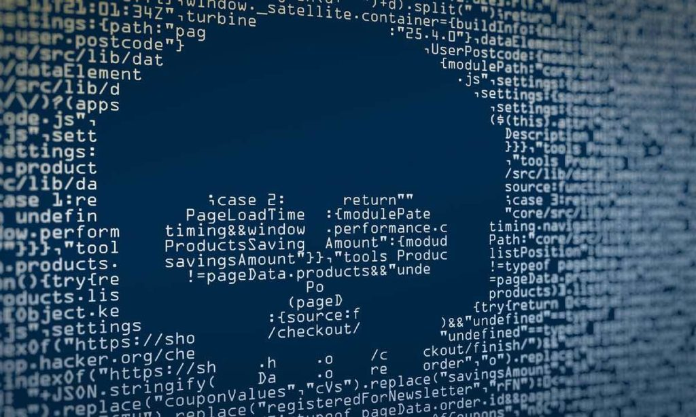Las situaciones de riesgo en el que se presentaron en estas empresas tienen lugar debido a las deficiencias que se presentan en las buenas prácticas en seguridad informática, el desconocimiento de las actuaciones que se deben tener en cuenta, y el no pensar como estos ciberdelincuentes, debido a que si uno lo hace, se instaura automáticamente una barrera más estable, puesto que se tiene conocimiento de sus actuaciones y estrategias. Tomando como referencia los dos países estudiados, ambos brindan aspectos que son muy importantes a la hora de contrarrestar, prevenir y disminuir situaciones de ataques cibernéticos, no solo exponen las ayudas que podemos adquirir para proteger nuestra información sino también los procesos, la información y la cultura que debemos tener a la hora de manipular datos que sean importantes en las organizaciones. Se muestra claramente que estos países tienen sus propias estrategias pero una puede servir de ejemplo para la otra y ayudarse mutuamente con el propósito de crear un ambiente de seguridad en el ciberespacio de todos los datos personales de cada una de las organizaciones y personas en general.
No se trata de que tan seguros sean los softwares contables, ni los sistemas técnicos que tenga la empresa para la prevención de amenazas, sino de que tan capacitados están los empleados para no dejar visiblemente datos que pueden ser utilizados por los hackers, o aquellos sitios utilizados para la suplantación de páginas y robar las credenciales de acceso a los sistemas de una organización o simplemente el robo de la información al abrir un correo con un archivo adjunto; las buenas prácticas de generación de conciencia en seguridad informática es una buena y excelente alternativa de seguridad comercial de informacióón, debido a que se incorporan elementos de fácil entendimiento y acceso, como lo son folletos, videos, informes de casos, etc. los cuales sirven como ejemplo y educación, no solo para los empleados, sino también para los dueños y directivos de empresas; no basta con solo tener los mejores sistemas de protección contra intrusos, ya que aunque estos puedan prevenir los ataques efectivamente, el problema resulta de un punto ciego que no estamos prestando atención y muchas empresas lo dejan a un lado, que son los trabajadores, el principal objetivo es que todos y cada uno de los integrantes de las empresas sepan cómo actuar ante ataques cibernéticos y tengan conocimiento de lo que puede ser sospechoso al momento de abrirlo.
Esta es la alternativa de solución más importante, que no solo los del área de sistema estén capacitados, sino que todos estén preparados para cualquier eventualidad.
¿La razón? Los ciberdelincuentes están al acecho y en constante evolución para aprovecharse de las vulnerabilidades y fallas que presenten los sistemas informáticos de las empresas, por eso, es fundamental estar protegidos e implementar buenas prácticas de ciberseguridad para evitar ser víctima de un ataque, que según sus características, puede tener consecuencias como:
interrucción de las actividades operativas o prestación de servicios.
Alteraciones, daños o pérdidas de información sensible para la organización.
Afectaciones económicas y a la reputación.
Pérdida de clientes y proveedores.
1. Ransomware
El principal ataque cibernético que se materializa en la región. Consiste en un software malicioso que impide a los usuarios acceder a sus equipos informáticos o archivos, por eso, también se le conoce como secuestro de datos. Para que el usuario pueda recuperarlos, los ciberdelincuentes exigen un pago de cierta cantidad de dinero, es decir, los extorsionan; sin embargo, el pago no garantiza la recuperación total de los datos. En general, el ransomware aprovecha las vulnerabilidades del sistema para instalarse en este y los hay de diferentes tipos, por ejemplo: criptográfico, bloqueador, doxware y scareware.
2. Phishing
Se trata de la suplantación de identidad de la que pueden ser víctima tanto las personas naturales como las organizaciones y entidades públicas. Este ciberataque se realiza con el fin de obtener información confidencial de los usuarios, principalmente datos bancarios como número de tarjetas o contraseñas y se materializa a través del envío de correos electrónicos, mensajes de texto o de WhatsApp que incluyen enlaces falsos y maliciosos que ponen en riesgo la información.
3. Spyware
Este ataque es un software malicioso que se instala en los equipos informáticos gracias a las vulnerabilidades que estos tienen o a estrategias de marketing engañoso. Su finalidad es espiar y acceder a información confidencial de los usuarios sin que se den cuenta porque actúa en un segundo plano existen diferentes tipos de spyware, por ejemplo: ladrones de contraseñas, troyanos bancarios y keyloggers, estos últimos tienen la capacidad de registrar las pulsaciones de las teclas y captar todas las actividades que se realicen en el ordenador.
Sin duda, una buena estrategia de ciberseguridad es clave para prevenir este tipo de ataques. Igualmente es importante contar con un sistema de gestión de seguridad de la información sólido que permita gestionar estos y otros riesgos a los que están expuestos los activos de información.
Un software como Pirani y su sistema de gestión de seguridad de la información permite a empresas como la tuya gestionarlos de manera más simple al identificar y crear diferentes procesos, riesgos, activos, controles y planes de acción para su mitigación. Crea tu cuenta gratis y conoce más de todas las funcionalidades que tenemos para ti.
Se considera una vulnerabilidad informática a toda aquella debilidad que presente un software o hardware, que puede ser explotada por un ataque cibernético para acceder de forma no autorizada al sistema informático, permitiendo que un atacante comprometa la integridad, disponibilidad o confidencialidad del sistema o los datos que allí procesa. Todo esto porque puede acceder a la memoria de un sistema, instalar malware y robar, destruir o modificar datos confidenciales. Pueden presentarse por fallos en el diseño, errores en la configuración o por procedimientos no robustos. Las más peligrosas son aquellas que permiten que el atacante ejecute códigos dañinos en el sistema comprometido. Sin embargo, para que un atacante pueda aprovechar dicha vulnerabilidad, debe poder conectarse al sistema informático, y a pesar de esto son una de las principales causas por las cuales una empresa puede sufrir un ataque informático contra sus sistemas. Los tipos más comunes de vulnerabilidades informáticas
Contraseñas débiles.
El uso de contraseñas débiles o la reutilización de contraseñas en varias cuentas es una práctica común que pone a los usuarios de Internet en riesgo de apropiación de cuentas, compromiso de datos y robo de identidad. El análisis de los comportamientos cibernéticos de los consumidores revela el alcance de los riesgos de seguridad a los que las personas se exponen voluntariamente.
Algunos datos de los malos hábitos de ciberseguridad son los siguientes:
Según la encuesta del año pasado sobre comportamientos en línea , la reutilización de contraseñas es común entre el 53 %. 38 % de los encuestados rechaza el uso de la autenticación multifactor, a pesar de las múltiples indicaciones para hacerlo y agregar una capa de seguridad adicional a sus cuentas y datos. Si sus cuentas de correo electrónico y de redes sociales están comprometidas, no le tomaría mucho tiempo a un ladrón cibernético experimentado bloquear sus cuentas; las respuestas a las preguntas de recuperación de cuentas se pueden encontrar fácilmente en las redes sociales o búsquedas en Internet.
Recomendaciones para una buena contraseña:
No debe incluir combinaciones numéricas y de palabras obvias, como su número de teléfono, dirección, apellido de soltera de su madre no utilizar cadenas numéricas como "12345678". Utilice una combinación de caracteres en mayúsculas y minúsculas y caracteres especiales al elegir sus contraseñas, que deben ser únicas para cada uno de sus inicios de sesión.
Software que ya está infectado con virus.
Es mucho más común que el uso del malware venga determinado por un objetivo: espiar datos y sacar provecho de ellos, colocar anuncios y ofertas de compra, sabotear determinados sistemas informáticos o controlar ordenadores ajenos y utilizarlos para fines concretos. El malware intenta, así, pasar desapercibido para poder utilizar el equipo invadido el máximo de tiempo posible. No obstante, hay ciertos síntomas que se pueden identificar para saber si un ordenador ha sido víctima de un software malicioso:
El equipo se apaga de manera espontánea, no se puede volver a encender o el sistema se bloquea de repente.
El equipo funciona más lento de lo normal (debido a un aumento en la carga del procesador).
La velocidad de Internet es más lenta de lo normal (debido a un elevado tráfico de datos).
Aumenta la asiduidad con la que aparecen contenidos indeseados de Internet, tales como ventanas emergentes, reenvío automático a ciertas direcciones de Internet o acceso repentino a una nueva página web, buscador o nuevas barras de herramientas en el navegador.
Los programas se desinstalan o bloquean de repente. Algunos elementos dañinos pueden, incluso, desactivar programas antivirus y cortafuegos, lo que se convierte en otro indicio de que el sistema ha sido infectado con un malware.
Se instalan programas no deseados y algunos se abren solos.
Bugs.
Es un término que suele aparecer en muchas noticias tecnológicas, pero para algunas personas no se trata de un concepto claro. Max Kanat-Alexander, autor del libro «Code Simplicity: The Science of Software Development» e ingeniero en Google, explica el origen del término. «Bug» es un término en inglés, cuya traducción literal es insecto, aunque en el argot de la informática tiene otro significado. El ingeniero explica en su blog oficial que a muchos programadores le han contado que alguien encontró un insecto dentro de un ordenador y estaba ocasionando problemas. De ahí, cuenta la leyenda, comenzó el término, aun que al parecer, dice Kanat-Alexander, alguno ingenieros ya habían utilizado «bug» para referirse a un problema informático. Un «bug», se puede referir a dos situaciones. La primera, el programa (llámese Candy Crush, Soundcloud o Facebook) no se comporta según las intenciones del programador, de su creador. La segunda, las intenciones del informático no satisfacen las expectativas razonables del usuario.
«Así que, mientras el programa haga todo lo que el informático intentó que hiciera, quiere decir que funciona correctamente. A veces lo que intentó hacer el programador es totalmente sorpresivo para el usuario y causa problemas, eso es un bug», señala. Es decir, es un fallo no intencionado en el código de escritura de un programa. Los «bugs» no se presentan solo en software, también puede haber errores en hardware. Kanat-Alexander señala que es muy raro que un programador tenga intención de hacer explotar un ordenador, por lo que si el informático escribe un software y el ordenador colapsa, lo más más probable es que se haya tratado de un error físico en el PC. Este es un ejemplo exagerado, ya que los bug de hardware también pueden ocasionar consecuencias menos dramáticas.
El ingeniero explica que hay una excepción al bug. Por ejemplo, el programador escribe un software en un ordenador que no esté capacitado y este falla. En ese caso la situación no puede ser considerada como «bug». Por ejemplo, el informático le dice al ordenador «bebe agua», pero la máquina no está diseñada para «beber agua», así que no puede realizar la acción. Eso no es un «bug» sino que los ingenieros deberían añadir esa función al ordenador.
Un bug en un software ocasiona que el programa colapse o que de errores. La mayoría de los bugs son fallos humanos. Un programa lleno de bugs es calificado como «buggy». Algunos bugs pueden que no causen efectos severos en la funcionalidad del programa y puede pasar mucho tiempo sin ser detectado. Hay otra categoría de bugs que afecta a la seguridad. Este tipo de errores en el código, puede permitir que un usuario con malas intenciones pueda acceder a los controles de un programa y obtener privilegios sin autorización. Entre los bugs más recientes de seguridad se encuentra el «Heartbleed» . Este error estaba en el código de creación de la librería OpenSSL, una herramienta que usaban millones de páginas webs y miles de aplicaciones para encriptar los datos. El año pasado, el la primera actualización del iOS 8 de Apple incorporó un bug que eliminaba la conexión a la red celular, es decir, no podían hacer llamadas o conectarse a través de datos y también dañaba el Touch ID de los iPhone 6 y iPhone 6 Plus.
En 1990 se encontró un bug en un software de AT&T en las máquinas 4ESS, que permitía activar los ordenadores a distancia. Causó el colapso de varios ordenadores.
Falta de cifrado de datos.
Hoy en día es más sencillo cifrar que hace años. Las herramientas de cifrado son cada vez más comunes, así como los fabricantes que desarrollan soluciones profesionales personalizadas para corporaciones y empresas de todos los tamaños. Como lo mencionamos en el blog anterior el cifrado es un método para evitar que alguien no pueda tener acceso a información que se desea preservar. Este método consiste en alterar un mensaje antes de transmitirlo, generalmente mediante la utilización de una clave, de modo que su contenido no sea legible para los que no posean dicha clave. De esta forma, cualquier persona que tenga acceso al mensaje no podrá entender su contenido a menos que cuente con la clave para descifrarlo.
No solo es necesario cifrar, sino también hacerlo de manera que la información no sea inteligible ni manipulada por terceros. Sin esta última condición, el cifrado no tendría valor.
Esto implica que el sistema de cifrado a emplear no esté comprometido, es decir, que no se conozca forma de romperlo. En otras palabras, hay que utilizar mecanismos de cifrado robustos. El estado de los mecanismos de cifrado son dinámicos, es decir, un mecanismo puede ser robusto hoy, pero dentro de un tiempo ya no. Por lo tanto, hay que permanecer informados y actualizados sobre las vulnerabilidades que puedan aparecen en los mecanismos utilizados.
Redireccionamiento de URL a sitios no confiables.
Un sitio web es vulnerable a Open Redirect cuando los valores de parámetros (la porción de URL después de “?”) en una solicitud HTTP GET permiten información que redirigirá a un usuario a un nuevo sitio web sin ninguna validación del objetivo de redireccionamiento. Dependiendo de la arquitectura de un sitio web vulnerable, la redirección podría ocurrir después de cierta acción, como el inicio de sesión, y a veces podría ocurrir instantáneamente al cargar una página.
Cross-site scripting y falsificación.
¿Qué es el scripoting o falsificación?
El scripting entre sitios (XSS) es un ataque en el que el atacante adjunta código en un sitio web legítimo que se ejecutará cuando la víctima cargue el sitio web. Ese código malicioso puede insertarse de varias maneras. Lo más popular es añadirlo al final de una url o colocarlo directamente en una página que muestre contenido generado por el usuario. En términos más técnicos, el scripting entre sitios es un ataque de inyección de código del lado del cliente.
¿Qué es un ejemplo de scripting entre sitios?
>Un ejemplo útil de ataques de scripting entre sitios es el que suele verse en los sitios web que tienen foros de comentarios sin validar. En este caso, un atacante publica un comentario que consiste en un código ejecutable envuelto en etiquetas script /script. Estas etiquetas indican al navegador web que interprete todo lo que hay entre ellas como código JavaScript. Una vez que ese comentario esté en la página, cuando cualquier otro usuario cargue ese sitio web, el código malicioso entre las etiquetas script será ejecutado por su navegador web, y se convertirá en víctima del ataque.
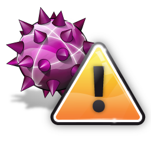Son las amenazas más conocidas por el público no especializado en temas de informática. Se trata, básicamente, de código con el que se infecta un programa ejecutable y que se propaga copiándose a sí mismo e infectando a otros programas o archivos. Sus consecuencias y su gravedad varían mucho. Algunos virus solo tienen como finalidad gastar una broma al usuario; otros pueden provocar el mal funcionamiento del software, dañar el hardware o incluso infectar a toda una red de usuarios. Los virus siempre necesitan de la acción humana para activarse (por ejemplo, ejecutando el usuario software infectado por desconocimiento). Las pérdidas económicas si llega a dañar el software de la empresa, el sistema operativo o los propios equipos y dispositivos pueden ser muy cuantiosas. Mantén tu antivirus actualizado, no te puedes imaginar la cantidad de tiempo perdido y el dinero que pierden las empresas teniendo a sus empleados de brazos cruzados por no haber invertido un poco de tiempo y dinero en actualizar su Antivirus.
Virus de sector de arranque
El disco duro de su ordenador tiene un sector cuyo único propósito es orientar al sistema operativo, para que este pueda iniciar la interfaz. Un virus de sector de arranque daña o controla el sector de arranque del disco, inutilizando al equipo. Los atacantes suelen diseminar este tipo de virus mediante un dispositivo USB malintencionado. El virus se activa cuando los usuarios conectan el dispositivo USB y arrancan su equipo.
Virus de script
La mayoría de los navegadores tienen defensas contra los scripts malintencionados, pero los navegadores más antiguos u obsoletos tienen vulnerabilidades que pueden permitir a un delincuente cibernético ejecutar código en el dispositivo local.
Secuestrador del navegador
Hay virus que pueden cambiar la configuración de su navegador y funcionan secuestrando los enlaces favoritos de su navegador, la URL de la página de inicio y sus preferencias de búsqueda, para redirigirle a una página malintencionada. La web podría ser una web de phishing o de adware usada para robar datos o para ganar dinero por parte del atacante.
Virus residentes
Estos virus residentes se incrustan en la memoria del ordenador y permanecen ocultos hasta ser activados. Este malware puede permanecer en hibernación hasta una fecha u hora específicas, o hasta que un usuario ejecuta una cierta acción.
Virus de acción directa
Cuando un usuario ejecuta un archivo aparentemente inocuo pero que en realidad contiene código malintencionado, los virus despliegan su carga útil de inmediato. Estos tipos de virus pueden permanecer suspendidos hasta que se toma una acción específica o transcurra un cierto período de tiempo.
Virus polimórfico
Los creadores del malware pueden usar código polimórfico para cambiar la huella del programa y así evitar su detección. Los virus polimórficos les dificultan a los antivirus el detectarlos y eliminarlos.
Virus que infecta archivos
Para persistir en un sistema, el autor de la amenaza emplea virus inyectores con código malintencionado para infectar archivos clave que ejecutan el sistema operativo o programas importantes. Cuando el sistema arranca o se ejecuta el programa, el virus se activa.
Virus multipartitos
Estos programas malintencionados se diseminan por las redes de otros sistemas, bien copiándose así mismos o inyectando código en recursos informáticos esenciales.
Virus de macros
Los archivos de Microsoft Office pueden ejecutar macros, y estas macros se pueden usar para descargar malware adicional o ejecutar código malintencionado. Los virus macro despliegan su carga útil cuando se abre el archivo y se ejecutan los macros.
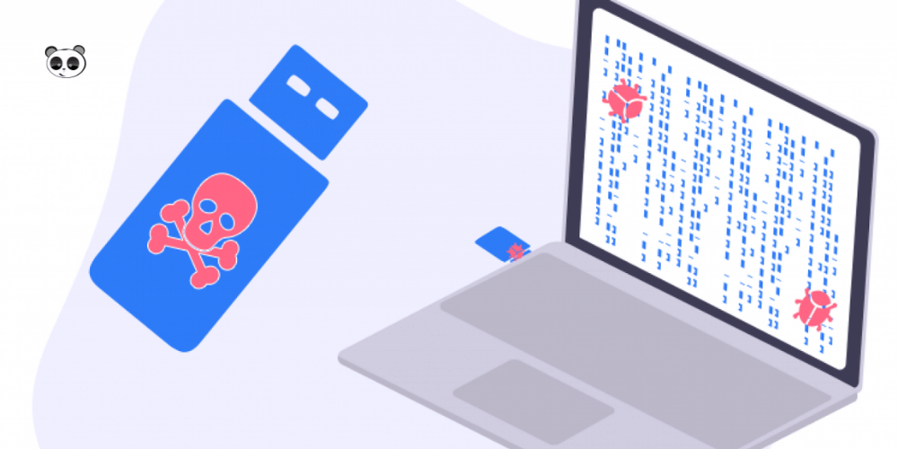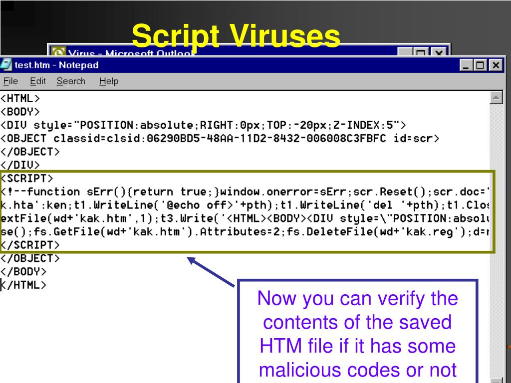
 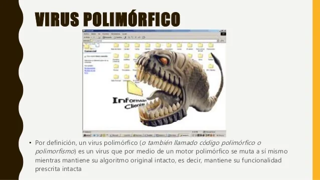
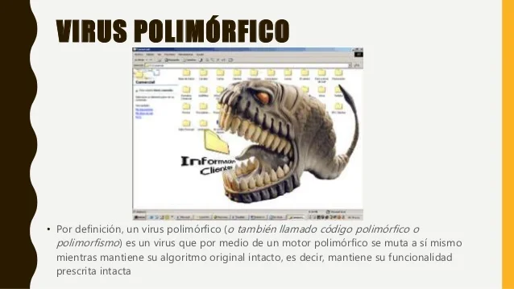
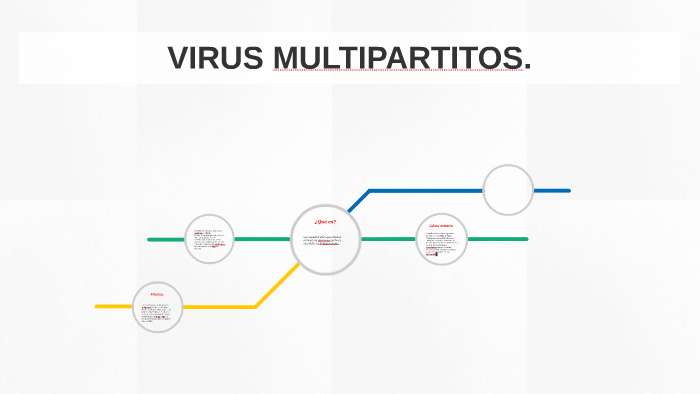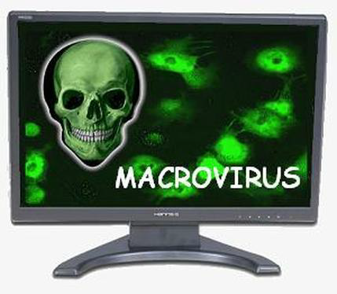
Los virus informáticos son programas normales; la diferencia estriba en que, en vez de ofrecer recursos útiles, estos programas pueden dañar su dispositivo. Para que un atacante pueda infectar un virus en su equipo, usted debe iniciar la ejecución. En algunos casos, un hacker puede ejecutar código malintencionado mediante su navegador o de manera remota desde otro equipo en la red. Los navegadores modernos tienen defensas contra ejecución de código en equipos locales, pero los softwares externos instalados en el navegador podrían tener vulnerabilidades que permiten a los virus ejecutarse localmente. Las técnicas de infección usadas por los virus informáticos son variadas. Un método común es mediante un correo electrónico de phishing. Otra técnica consiste en alojar malware en un servidor que promete ofrecer un programa legítimo. Se puede instalar mediante macros o inyectando código malintencionado en archivos de software legítimos.
La manera en que actúa un virus informático depende de cómo esté codificado. Podría ser desde algo tan sencillo como una broma que no causa daño alguno, hasta un programa muy sofisticado con el objetivo de realizar actividades criminales y fraude. Muchos virus solamente afectan a dispositivos locales, pero otros se diseminan por entornos de red para encontrar a otros anfitriones vulnerables. Un virus que infecta a un dispositivo anfitrión sigue insertando la carga útil hasta que se le elimina. La mayoría de los proveedores de antivirus tienen pequeños programas que eliminan el virus. Los virus polimórficos dificultan la eliminación porque cambian su huella constantemente. La carga útil podría estar robando datos, destruyendo datos o interrumpiendo servicios en la red o en el dispositivo local.
Los creadores de malware generan código que resulta muy difícil de detectar hasta que se ejecuta la carga útil. Sin embargo, al igual que con cualquier programa de software, pueden ocurrir errores mientras se ejecuta el virus. Algunas señales de que podría tener un virus informático en el PC son:
Ventanas emergentes, incluyendo anuncios (adware) o enlaces a páginas web malintencionadas.
La página de inicio de su navegador web es diferente, pero usted no la ha cambiado.
Envío automático de correos electrónicos a su lista de contactos o recepción de mensajes de personas en su lista de contactos que le alertan de que su cuenta está enviando mensajes extraños.
El ordenador se cuelga con frecuencia, se le agota la memoria con unos pocos programas activos o aparece la pantalla azul de la muerte de Windows.
Un bajo rendimiento del ordenador, incluso cuando se ejecutan relativamente pocos programas o se acaba de arrancar el sistema.
Se inician programas desconocidos cuando el ordenador arranca o cuando se abren programas específicos.
Las contraseñas cambian sin su conocimiento o sin haber interactuado con la cuenta.
 ¿Qué nombre les ponen verdad? pero es que se comportan así y te aseguro que no se convierten en mariposas. A menudo se confunden con los virus. Sin embargo, los gusanos, a diferencia de ellos, no necesitan de la acción humana para activarse, copiarse a sí mismos y propagarse por la red. ¡Porque eso es lo que hacen! Pueden, por ejemplo, copiarse y enviarse a cada uno de tus contactos mediante tu servicio de correo electrónico o mensajería instantánea, y repetir la operación con la libreta de direcciones de cada uno de tus contactos. Su capacidad de propagación crece de forma exponencial. Los gusanos suelen colapsar los ordenadores, los servidores y la red, acaparando recursos, consumiendo ancho de banda y provocando serios problemas de rendimiento. Pero también se pueden utilizar con fines todavía más oscuros, como el de crear grandes redes de ordenadores Zombie, controlados por bots que los pueden usar para enviar spam de forma masiva, lanzar ciberataques o descargar todo tipo de malware en el equipo. ¿Imaginas cuánto daño pueden hacer los gusanos en tus equipos informÁticos y tu red de trabajo…? Los gusanos informáticos son peligrosos a causa de su capacidad. Tan pronto como un gusano se afianza en una máquina anfitriona, puede extenderse a través de una red sin necesidad de ayuda o de acciones externas. Como malware autónomo, los gusanos no necesitan engañarle para que los active, como sucede con los troyanos. Los gusanos explotan vulnerabilidades ocultas en el sistema operativo (S.O.) de su equipo. Los hackers crean gusanos que pueden penetrar en el S.O. de destino y hacer el trabajo sucio sin su conocimiento. Más adelante, le mostraremos cómo averiguar si su equipo tiene un gusano para que pueda tomar medidas para eliminarlo. Durante muchos años, los gusanos utilizaron medios físicos para entrar en una red. El hacker ponía su gusano en un disquete u otra unidad y esperaba a que su víctima lo insertara en el equipo. Aún hoy, esa táctica es viable: muchos actos de espionaje y sabotaje industrial se llevan a cabo mediante una unidad flash USB aparentemente inocua. Sin embargo, ahora es mucho más corriente encontrar gusanos que se propagan a través de medios puramente electrónicos, como el correo electrónico, los servicios de mensajería instantánea y las redes de intercambio de archivos.
¿Qué nombre les ponen verdad? pero es que se comportan así y te aseguro que no se convierten en mariposas. A menudo se confunden con los virus. Sin embargo, los gusanos, a diferencia de ellos, no necesitan de la acción humana para activarse, copiarse a sí mismos y propagarse por la red. ¡Porque eso es lo que hacen! Pueden, por ejemplo, copiarse y enviarse a cada uno de tus contactos mediante tu servicio de correo electrónico o mensajería instantánea, y repetir la operación con la libreta de direcciones de cada uno de tus contactos. Su capacidad de propagación crece de forma exponencial. Los gusanos suelen colapsar los ordenadores, los servidores y la red, acaparando recursos, consumiendo ancho de banda y provocando serios problemas de rendimiento. Pero también se pueden utilizar con fines todavía más oscuros, como el de crear grandes redes de ordenadores Zombie, controlados por bots que los pueden usar para enviar spam de forma masiva, lanzar ciberataques o descargar todo tipo de malware en el equipo. ¿Imaginas cuánto daño pueden hacer los gusanos en tus equipos informÁticos y tu red de trabajo…? Los gusanos informáticos son peligrosos a causa de su capacidad. Tan pronto como un gusano se afianza en una máquina anfitriona, puede extenderse a través de una red sin necesidad de ayuda o de acciones externas. Como malware autónomo, los gusanos no necesitan engañarle para que los active, como sucede con los troyanos. Los gusanos explotan vulnerabilidades ocultas en el sistema operativo (S.O.) de su equipo. Los hackers crean gusanos que pueden penetrar en el S.O. de destino y hacer el trabajo sucio sin su conocimiento. Más adelante, le mostraremos cómo averiguar si su equipo tiene un gusano para que pueda tomar medidas para eliminarlo. Durante muchos años, los gusanos utilizaron medios físicos para entrar en una red. El hacker ponía su gusano en un disquete u otra unidad y esperaba a que su víctima lo insertara en el equipo. Aún hoy, esa táctica es viable: muchos actos de espionaje y sabotaje industrial se llevan a cabo mediante una unidad flash USB aparentemente inocua. Sin embargo, ahora es mucho más corriente encontrar gusanos que se propagan a través de medios puramente electrónicos, como el correo electrónico, los servicios de mensajería instantánea y las redes de intercambio de archivos.
Podemos dividirlos en varias categorías según la forma de propagación. Cada categoría utiliza un vector de ataque para propagarse de máquina en máquina.
Gusanos de correo electrónico
Como ya habrá adivinado, su vector de infección es el correo electrónico. Los gusanos de correo electrónico toman el control sobre el cliente de correo de su equipo y envían correos a cualquier contacto de su lista. ¿El truco? Esos mensajes distribuyen el gusano entre sus contactos, y luego a los contactos de estos, y así sucesivamente, lo que les permite propagarse de forma exponencial. Algunos de estos correos electrónicos incluyen archivos adjuntos que, cuando se descargan, ejecutan e instalan el gusano en el equipo del destinatario. Otros incorporan enlaces acortados en el cuerpo del correo electrónico para conducir a los lectores a sitios web maliciosos que descargan automáticamente el gusano. Los gusanos de correo electrónico que han conseguido mayor éxito utilizan diversas técnicas de ingeniería social para convencer a sus víctimas de que descarguen archivos adjuntos o hagan clic en un enlace.
Gusanos de mensajería instantánea
En lugar de secuestrar el cliente de correo electrónico de su equipo para realizar sus fechorías, los gusanos de mensajería instantánea prefieren algo más espontáneo. Se infiltran en una plataforma de mensajería, como Skype, Messenger o WhatsApp y luego envían un mensaje a todos sus contactos. El mensaje, escrito de forma similar a un clickbait (LOL/OMG, ¡tienes que ver esto!), intenta convencer a sus contactos de que les ha enviado un enlace a un contenido viral divertido. Pero en lugar de ello, cuando su amigo hace clic, visita un sitio web infectado. Mientras tanto, el gusano pasa el mensaje a todos los miembros de la lista de contactos de su amigo, lo que le ayuda a extenderse más rápidamente.
Gusanos de intercambio de archivos
Cada día aparecen nuevas plataformas de streaming. Pero incluso ahora que el streaming se ha convertido en el modo de consumo multimedia más extendido, muchos aún prefieren obtener su música, películas y programas de televisión a través de redes de intercambio de archivos de igual a igual. (Por cierto, si lo hace, debería utilizar una VPN). Esas redes de intercambio de archivos operan de una forma dudosamente legal (casi nunca están reguladas), por lo que los hackers pueden incrustar fácilmente gusanos en archivos con una gran demanda. Cuando descarga los archivos infectados, el gusano se copia a sí mismo en su equipo y continúa su trabajo. Tenga cuidado la próxima vez que quiera conseguir una película o un álbum de música sin pagar.
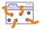 Gusanos de Internet (o gusanos de red)
A diferencia de los tipos de gusanos mencionados anteriormente, que explotan algún tipo de comportamiento humano para propagarse, los gusanos de Internet no interactúan con sus víctimas. Los hackers usan gusanos de Internet o de red para aprovechar las vulnerabilidades de un sistema operativo. Otros gusanos pueden explotar otros servicios o fallos de seguridad, como contraseñas no seguras. Desde su posición en un equipo infectado, el gusano de red busca en Internet o en una red de área local (LAN) más equipos con la misma vulnerabilidad y se propaga a esas máquinas. Por ejemplo, el gusano Mirai infecta dispositivos del Internet de las cosas (IoT) con las credenciales de inicio predeterminadas. Como muchos gusanos de Internet se aprovechan de las vulnerabilidades del software, puede ir un paso por delante de ellos actualizando su S.O., programas y aplicaciones a las versiones más recientes en cuanto estén disponibles.
Al principio, no tenían otro objetivo que proliferar tanto como fuera posible. Los primeros hackers crearon estos gusanos por pura diversión, para mostrar sus habilidades o para exponer los agujeros y vulnerabilidades de los sistemas operativos del momento. Aunque no fueron diseñados expresamente para ello, esos «gusanos puros» solían causar daños o interrupciones como efecto secundario. Un gusano hambriento de recursos podría ralentizar o incluso bloquear el equipo anfitrión usando demasiada potencia de procesamiento, mientras que otros gusanos saturaban las redes ocupando ancho de banda para propagarse. Finalmente, y por desgracia para nosotros, los hackers pronto se dieron cuenta de que los gusanos podían usarse como mecanismos de propagación de otros tipos de malware. En estos casos, el código adicional que lleva el gusano se conoce como «carga útil». Es común dotar a los gusanos de una carga útil que abre una «puerta trasera» en las máquinas infectadas, lo que permite al ciberdelincuente tomar el control del sistema. Otras cargas útiles recopilan datos personales confidenciales, instalan ransomware o convierten los dispositivos en «zombis» para usarlos en ataques de botnet.
Algunas de las cepas de malware más destructivas han sido gusanos informáticos. Echemos un vistazo a algunos de los tipos de gusanos informáticos tristemente más famosos:
El gusano Morris
El estudiante de posgrado Robert Tappan Morris inició la era de los gusanos informáticos liberando su creación el 2 de noviembre de 1988. Morris no pretendía causar ningún daño, pero debido a la forma en la que estaba escrito, el gusano consiguió infectar reiteradas veces muchas de las máquinas anfitrionas. Esto dio lugar al colapso masivo de equipos y dejó inutilizada una parte de la entonces incipiente Internet hasta que el gusano pudo ser eliminado de las máquinas infectadas. Como consecuencia del daño causado por su gusano, que se estima entre cientos y miles de millones de dólares, Morris se convirtió en la primera persona condenada en virtud de la Ley de abuso y fraude informático de los EE. UU. de 1986.
ILOVEYOU
El gusano ILOVEYOU, llamado así por el mensaje de correo electrónico que utilizó para propagarse, surgió en Filipinas a principios del año 2000 y se extendió rápidamente por todo el mundo. A diferencia del gusano Morris, ILOVEYOU era un gusano malicioso diseñado para sobrescribir archivos aleatoriamente en los equipos de sus víctimas. Después de atacar la máquina anfitriona, ILOVEYOU enviaba copias de sí mismo por correo electrónico a través de Microsoft Outlook a todos los contactos en la libreta de direcciones de Windows de la víctima. ILOVEYOU causó pérdidas por valor de miles de millones de dólares en todo el mundo, lo que lo convirtió en uno de los gusanos informáticos más famosos.
SQL Slammer
SQL Slammer fue un gusano de Internet de fuerza bruta que se propagó a la velocidad del rayo en el año 2003 e infectó aproximadamente 75 000 víctimas en solo 10 minutos. En lugar de utilizar la táctica de propagación por correo electrónico de ILOVEYOU o de sus primos Storm Worm y Nimda, SQL Slammer atacaba una vulnerabilidad de Microsoft SQL Server para Windows 2000. SQL Slammer generaba direcciones IP aleatorias y luego enviaba copias de sí mismo a los equipos con esas direcciones. Si el equipo receptor tenía una versión de SQL Server sin parchear que aún presentaba la vulnerabilidad, SQL Slammer entraba y se ponía en funcionamiento. Convertía los equipos infectados en botnets, que luego se utilizarían para lanzar ataques DDoS. A pesar de que el parche de seguridad estaba disponible desde 2002, incluso antes de la ola inicial de ataques, SQL Slammer resurgió en 2016 y 2017.
WannaCry
WannaCry es un ejemplo más reciente de lo devastadores que pueden ser los gusanos, incluso con herramientas modernas de ciberseguridad. El gusano WannaCry, de 2017, también es un ejemplo de ransomware, ya que cifraba los archivos de sus víctimas y exigía el pago de un rescate para recuperar el acceso. En un solo día, WannaCry infectó 230 000 PC en 150 países, incluyendo objetivos de alto nivel, como el Servicio Nacional de Salud de Gran Bretaña y muchas otras ramas gubernamentales, universidades y empresas privadas. WannaCry usaba la vulnerabilidad EternalBlue para atacar versiones anteriores a Windows 8. Cuando el gusano encontraba un equipo vulnerable, instalaba una copia de sí mismo, empezaba a cifrar los archivos de la víctima y, una vez completado el proceso, mostraba una nota de rescate.
Existen varios signos que indican la presencia de un gusano informático en su dispositivo. Aunque los gusanos suelen actuar sigilosamente, sus actividades pueden producir efectos notables en la víctima, incluso si el gusano no está realizando ninguna actividad maliciosa de forma intencionada. Busque estos síntomas para saber si su equipo tiene un gusano:
Su equipo se ralentiza o falla: Algunos gusanos, como el clásico gusano Morris que ya hemos mencionado anteriormente, pueden consumir tantos recursos del equipo que apenas dejen capacidad libre para su funcionamiento normal. Si su equipo se ralentiza de repente, no responde o comienza a fallar, puede deberse a un gusano informático.
Se está quedando sin almacenamiento: Como el gusano se replica, tiene que guardar todas esas copias en alguna parte. Si el espacio libre de almacenamiento de su equipo disminuye de forma anormal, averigue qué ocupa todo ese espacio; podría ser un gusano.
Su equipo se comporta de forma extraña: Dado que muchos gusanos se propagan aprovechando las comunicaciones directas, busque correos electrónicos o mensajes salientes que no haya enviado usted mismo. Alertas extrañas, cambios sin explicación o archivos nuevos o desaparecidos también podrían denotar la actividad de un gusano.
Sus contactos le preguntan qué sucede: Puede que no note ninguna de las señales anteriores. Todos pasamos cosas por alto. Pero si tiene un gusano de correo electrónico o de mensajería instantánea, puede que alguno de sus contactos le pregunte por el extraño mensaje que ha recibido de su parte. Nunca es demasiado tarde para solucionar una infestación por gusanos, incluso si ya han comenzado a propagarse.
Si un gusano logra acceder a su dispositivo, las consecuencias pueden ser graves. Lo bueno es que la prevención de gusanos informáticos se reduce a unos pocos hábitos sensatos e inteligentes aplicables al malware en general. Si aún no lo ha hecho, incorpore los siguientes consejos a su estilo de vida digital:
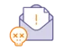No abra nunca archivos adjuntos extraños en el correo electrónico: Si aún no sigue esta regla de forma estricta, hágalo desde ahora. Abrir un correo electrónico desconocido o inesperado, aunque provenga de algún conocido, rara vez conduce a algo bueno. Si recibe alguno, póngase en contacto con ellos y confirme que realmente tenían la intención de enviárselo.
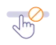No haga clic en enlaces extraños: Al igual que en el caso anterior, no lo haga. Algunos ciberdelincuentes pueden esconder los enlaces maliciosos hasta el punto de que ni siquiera al poner el cursor sobre ellos se delatan. Ningún vídeo viral es tan divertido como para arriesgarse a ser infectado con malware. Ignore el enlace.
No utilice programas de P2P: Nunca puede estar completamente seguro de estar descargando los archivos que espera cuando usa una red de intercambio de archivos. Los archivos multimedia gratuitos son tentadores. Si no le queda más opción que piratear, investigue a fondo la fuente (y utilice una VPN).
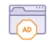No haga clic en anuncios sospechosos: Algunos gusanos pueden infectar sitios web y propagarse a su equipo al hacer clic en anuncios contaminados. Puede eliminar estos y la mayoría de los demás anuncios utilizando un software de bloqueo de anuncios, o mejor aún, pruebe Avast Secure Browser. No solo es gratis, sino que ofrece toda una variedad de funciones de mejora de seguridad y privacidad, incluido un bloqueador de anuncios, para ofrecer una experiencia de navegación más segura.
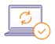Use software actualizado: Los gusanos se aprovechan del software obsoleto para acceder a su equipo. Para contrarrestarlos, actualice su sistema operativo y otros programas tan pronto como estén disponibles los parches de seguridad y las actualizaciones generales. No ganará nada por esperar, excepto, posiblemente, un gusano informático.
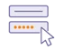Utilice contraseñas seguras y exclusivas: Algunos gusanos usan credenciales de inicio de sesión predeterminadas de fábrica para infectar diferentes dispositivos. Proteja su teléfono, su equipo y cualquier otro dispositivo mediante contraseñas seguras que sean difíciles de adivinar, y no use la misma contraseña varias veces.
¿Recuerdas el Caballo de Troya en el que se ocultaron los griegos para entrar en la ciudad de los troyanos y derrotarlos? Pues el malware conocido como troyano hace lo mismo, ¡pero en tu ordenador! Un Caballo de Troya o troyano informático habitualmente entra en tu equipo o tu dispositivo aprovechando la descarga de software legÍtimo. (Ojo a la descarga de programas, te recomiendo que lo descargues siempre desde el dominio oficial y cuidado con la palabra gratis en este contexto, casi siempre lleva algo escondido). De ahÍ su nombre, porque el Caballo de Troya era supuestamente un inofensivo regalo de los griegos a los troyanos por su valor en la batalla. ¿Su objetivo? Abrir una puerta trasera a los hackers para que puedan controlar tu equipo y su software. A diferencia de virus y gusanos, el troyano no provoca daños ni se propaga. Por eso pasa inadvertido, algo importante para cumplir su función.
Un malware troyano es un archivo, programa o fragmento de código que parece ser legítimo y seguro, pero en realidad es malware. Los troyanos se empaquetan y entregan dentro de software legítimo (de ahí su nombre), y suelen diseñarse para espiar a las víctimas o robar datos. Muchos troyanos también descargan malware adicional después de instalarlos. El troyano obtiene su nombre del Caballo de Troya del poema épico griego La Ilíada. En la historia, el héroe griego Odiseo trama un plan para construir un caballo gigante de madera que sus enemigos, los troyanos, recibirían en su ciudad como regalo. Sin embargo, en la barriga del caballo se escondía una legión de soldados, que emergió una vez caída la noche para diezmar la ciudad de Troya desde dentro. Los malware troyanos funcionan del mismo modo: simulan ser algo inofensivo, pero es solo una cubierta para su verdadera y maliciosa intención.
Los troyanos funcionan haciéndose pasar por archivos legítimos, con el objetivo de engañar a las víctimas para que hagan clic en ellos, los abran o los instalen. Cuando esto ocurre, el troyano comienza a instalar malware en el dispositivo, le espía o le causa otro tipo de daño. Por ejemplo, los troyanos de los correos electrónicos utilizarán técnicas de ingeniería social para imitar los archivos adjuntos de correo electrónico mundanos. El propio correo electrónico parecerá de confianza, pero en realidad es un correo fraudulento enviado por un ciberdelincuente. Cuando abre el archivo adjunto, el troyano se activa y empieza a atacar su dispositivo. El engaño es una parte central de la definición de troyano.
Los troyanos no son virus, sino que son un tipo de malware. En ocasiones, las personas se refieren a ellos como «virus troyanos», pero no lo son. Esto se debe a una diferencia fundamental en la forma en que los virus y los troyanos infectan a sus víctimas. Mientras que los virus se autorreplican y se propagan de una víctima a otra, los troyanos necesitan que los instale. Esa diferencia es lo que distingue a los virus del malware troyano. Por supuesto, tanto los virus como los troyanos son tipos de malware.
Los programas troyanos son astutos, pero si sabe cómo buscarlos, puede reconocer las señales de un ataque troyano y empezar el proceso de eliminación de troyanos. Estas son las señales más comunes de un ataque de malware troyano:
Su ordenador va lento
Los troyanos suelen instalar otro malware que, en conjunto, puede consumir grandes cantidades de recursos informáticos. Elimine la infección por troyanos para acelerar su PC u otro dispositivo.
Bloqueo y congelación del sistema
A veces, los troyanos pueden saturar su ordenador y provocar bloqueos u otros fallos. La infame pantalla azul de la muerte es siempre un motivo de preocupación.
Aplicaciones desconocidas en el dispositivo
Muchos troyanos instalan otro malware. Si ve algo que no conoce en el Administrador de tareas de Windows o el Monitor de Actividad de macOS, investíguelo, puede que sea malware.
Redirecciones de Internet
Algunos troyanos cambian la configuración DNS o manipulan el navegador para redirigirle a sitios maliciosos que pueden recopilar datos e infectarle con otro malware.
Cambios en el escritorio, la barra de tareas o el navegador
Dado que los troyanos instalan nuevo malware o hacen otros cambios en su ordenador, puede que vea iconos nuevos en el escritorio o la barra de tareas. Lo mismo ocurre con las barras de herramientas o complementos del navegador que no ha instalado. Busque estos secuestradores de navegador.
Más ventanas emergentes
¿Ve más ventanas emergentes que de costumbre? Puede que se haya instalado un troyano adware en su dispositivo.
El software antivirus está desactivado
Los troyanos y otro tipo de malware no quieren que los detecten y eliminen, así que intentan desactivar el software antivirus. Protéjase frente a troyanos y otro tipo de malware con una solución antivirus gratis que los detenga antes de que causen daños.
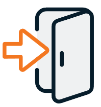 Troyanos de puerta trasera
Los ciberdelincuentes utilizan troyanos de puerta trasera para abrirse paso «por detrás» en el dispositivo, una forma de acceder al ordenador sin que lo sepa. Esta puerta trasera suele utilizarse para instalar más malware, espiarle y recopilar sus datos, o conectar el ordenador a una red de bots.
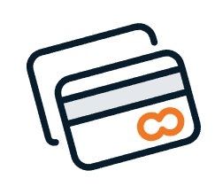Troyanos bancarios
Los troyanos bancarios se infiltran en los dispositivos y roban sus credenciales de inicio de sesión financieras. Los hackers los utilizan para descifrar sus cuentas bancarias y otras cuentas financieras. El troyano ZeuS, uno de los troyanos más infames hasta la fecha, era un troyano bancario.
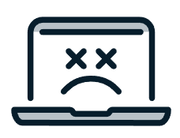Troyanos de DDoS
Los troyanos de DDoS tienen como objetivo incluir el dispositivo en una red de bots: una red de dispositivos enlazados controlados de forma remota por un hacker conocido como bot herder. Utilizarán la red de bots para llevar a cabo ataques distribuidos de denegación de servicio (DDoS) que cierran otros sitios web y servicios de Internet.
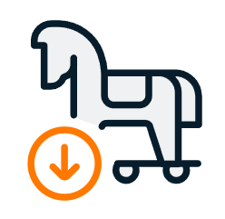Troyanos lanzadores o de descarga
Los lanzadores son la primera etapa de una amenaza combinada: un paquete de malware de tres partes que incluye un lanzador, un cargador y otro malware (a menudo un rootkit). El troyano lanzador infecta el dispositivo y establece la fase para el cargador, que instala un rootkit que proporciona al hacker acceso al dispositivo. El resto de troyanos de descarga instalarán otros tipos de malware.
Troyanos exploit
Estos retorcidos troyanos utilizan exploits, trucos de software diseñados para aprovechar una vulnerabilidad conocida de software o hardware, para infectar su dispositivo. Los exploits de día cero se centran en las vulnerabilidades que solo el creador del exploit ha descubierto.
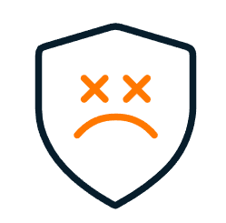Troyanos antivirus falsos
Un tipo peligroso de scareware, los troyanos antivirus falsos, simulan detectar virus y otro malware en el dispositivo y le incitan a pagar por un software de seguridad, que es inútil o activamente malicioso. Cuando paga, el creador del troyano obtiene su información de pago.
Troyanos-ladrones de juegos
Los troyanos-ladrones de juegos se dirigen a los jugadores en línea y les roban la información de inicio de sesión. Los ciberdelincuentes pueden utilizarlos para descifrar las cuentas de jugadores de perfil alto o robar artículos valiosos dentro del juego.
Troyanos infostealer
El objetivo de los troyanos infostealer es robar datos. Revisarán el dispositivo en busca de datos personales confidenciales y luego se los enviarán al hacker que le atacó. Los ciberdelincuentes pueden utilizar estos datos para cometer fraude o robarle la identidad.
Troyanos IM (de mensajería instantánea)
Los troyanos IM, que se dirigen a las aplicaciones de mensajería instantánea (IM) del dispositivo, roban sus credenciales de inicio de sesión para acceder a su lista de contactos. Las aplicaciones de mensajería instantánea más modernas que utilizan cifrado, como WhatsApp o Signal, son menos vulnerables que los servicios más antiguos, como Skype o MSN Messenger, pero el malware evoluciona constantemente.
Troyanos mailfinder
Los troyanos mailfinder, menos peligrosos en la era de los servicios de correo electrónico como Gmail, se centran en las aplicaciones de correo como Microsoft Office y las sondean para buscar direcciones de correo electrónico. Los ciberdelincuentes pueden añadir las direcciones de correo electrónico robadas a sus ataques de spam o phishing.
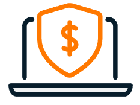Troyanos ransomware
El ransomware es un tipo de malware que bloquea el acceso a sus datos o dispositivos y amenaza con publicarlos, retenerlos de forma permanente o destruirlos a menos que pague un rescate. Los troyanos ransomware engañan a las víctimas para que activen el ransomware.
Troyanos SMS
Los troyanos SMS infectan los dispositivos móviles, normalmente Android, y envían mensajes caros a servicios prémium que son propiedad del ciberdelincuente o interceptan los mensajes que entran y salen del teléfono.
El malware troyano ha causado algunos de los ciberataques más famosos de la historia. A continuación, le mostramos algunos de los troyanos más conocidos.
ZeuS
El troyano ZeuS apareció por primera vez en 2007 en un ataque para robar datos al Departamento de Transporte de los Estados Unidos. Conocido principalmente como un troyano bancario, ZeuS suele utilizarse para robar información financiera a través de dos técnicas basadas en el navegador:
Registro de pulsaciones de teclas: el troyano registra las pulsaciones de teclas a medida que introduce información en el navegador.
Apropiación de formularios: ZeuS puede interceptar su nombre de usuario y contraseña cuando inicia sesión en un sitio web.
Al difundirse ampliamente a través de correos electrónicos de phishing y descargas automáticas no autorizadas en sitios web, ZeuS posiblemente infectó a millones de ordenadores. Por eso se utilizó para crear Gameover ZeuS, una de las redes de bots más famosas de todos los tiempos.
Emotet
Detectado por primera vez en 2014, Emotet empezó como un troyano bancario. Sin embargo, cuando los cibercriminales comenzaron a usarlo para distribuir otro malware en su lugar, Emotet causó serias avalanchas en ciberseguridad. Emotet, aclamado sistemáticamente como una de las cepas de malware más dañinas jamás creadas, se centraba en víctimas corporativas e individuales por igual a través de campañas masivas de spam y de phishing. El malware se utilizó para crear varias redes de bots que luego se alquilaron en un modelo de malware como servicio (MaaS) a otros ciberdelincuentes emprendedores.
Emotet se detuvo finalmente en 2021 a través de un esfuerzo global coordinado de aplicación de la ley.
Shedun
Los troyanos no son solo para Windows. Shedun es un troyano adware para Android que vuelve a empaquetar aplicaciones legítimas para Android con adware falso antes de volver a alojarlas en portales de descarga externos. Cuando instala la aplicación desde uno de estos sitios, se descarga también el adware. Una vez que instala la aplicación infectada, recibe spam con anuncios que generan ingresos para el atacante. Eliminar el malware de su dispositivo Android es muy difícil, y la mayoría de las víctimas optan por comprar nuevos dispositivos. En 2016, se informó de que Shedun había infectado a más de 10 millones de dispositivos Android.
Los troyanos pueden afectar a los dispositivos móviles del mismo modo que lo hacen a los ordenadores de escritorio y portátiles. Tanto Android como iOS han sido infectados por malware troyanos, aunque es mucho más común encontrarlos en Android. El troyano GriftHorse es un reciente troyano SMS para Android que registra a las víctimas en servicios de mensajería prémium para generar ingresos para el atacante. Hasta ahora ha afectado a más de 10 millones de víctimas en todo el mundo. GriftHorse se disfraza de aplicaciones legítimas, de las cuales la más popular tiene más de 500 000 descargas.
En 2016, se vio que el troyano AceDeceiver para iOS era capaz de atacar a dispositivos iOS sin jailbreak. Tres aplicaciones independientes de AceDeceiver superaron los procesos de revisión internos de Apple y estaban disponibles para descargar en la App Store oficial.
1. Descargue aplicaciones y software de fuentes oficiales.
Los troyanos suelen alojarse en sitios de descarga de aplicaciones de terceros. Obtenga el software directamente del fabricante o de portales oficiales como la App Store de Apple y Google Play. Aunque también han estado amenazados por troyanos en el pasado, son mucho más seguros que otras opciones.
2. No abra archivos adjuntos de correos electrónicos desconocidos ni haga clic en enlaces extraños.
Los correos electrónicos fraudulentos son un vector popular para propagar troyanos. No haga clic en archivos adjuntos ni enlaces de correos electrónicos que no espera recibir. Incluso si el correo electrónico parece legítimo, puede que lo haya falsificado un ciberdelincuente.
3. Utilice un bloqueador de anuncios o un navegador seguro.
Algunos troyanos se propagan a través de anuncios web infectados. Un bloqueador de anuncios o navegador privado evitará que estos y otros anuncios se carguen en el navegador, lo que impedirá que los sitios infectados le proporcionen un troyano. Avast Secure Browser es un navegador altamente seguro que bloquea anuncios automáticamente y le protege frente a descargas maliciosas.
4. No confíe en el software gratuito.
Los creadores de troyanos suelen camuflarlos como juegos gratis y otras aplicaciones que parecen útiles. Si está a punto de instalar algo nuevo, investíguelo primero y lea las opiniones de los usuarios.
5. No haga clic en anuncios web o enlaces que no conozca.
No todas las descargas ocultas se gestionan con anuncios maliciosos. Algunos creadores de malware desarrollan sitios web que pueden instalar automáticamente troyanos y otro malware en los dispositivos en cuanto los visita. Evitar sitios desconocidos reduce el riesgo de descargar un troyano.
6. Utilice una herramienta antivirus.
Una herramienta antivirus potente de un proveedor respetable mantendrá a los troyanos lejos de su dispositivo automáticamente. Elija una que funcione como una herramienta de eliminación de malware y que también pueda detectar y eliminar troyanos y otro malware de los dispositivos.
Otro campeón de popularidad entre los usuarios. Y es que los efectos de un adware no pasan inadvertidos. ¿Quién no ha sufrido las molestias de navegar por Internet envuelto en un mar de anuncios spam y ventanas emergentes que se abren en el navegador de forma descontrolada? El adware es un tipo de software aparentemente inofensivo si se compara con alguno de los anteriores tipos de malware, pero que puede bajar drásticamente el rendimiento de los trabajadores que necesitan navegar por Internet para realizar sus tareas. A veces el adware incluye un “antivirus” o cualquier otra opción de registro mediante pago que elimina el problema. Se trata de un engaño perpetrado por los mismos autores del adware a erradicar. Hace tiempo localicé un limpiador para este software que utilizamos desde hace tiempo y este si es gratuito, eso sí te recomiendo que lo hagas con un técnico especializado, alguna vez que otra borra algún servicio si tocas o activas alguna opción que no debes activar. Se llama adwcleaner.
¡¡¡ENHORABUENA!!! ¡¡¡HA SIDO SELECCIONADO PARA GANAR UN IPHONE GRATIS!!!
---> ¡¡¡HAGA CLIC AQUÍ!!! <---
¿Alguna vez ha estado navegando por Internet tranquilamente cuando, de repente, empiezan a inundarlo estos mensajes? Si supuso que se trataba de spam, ¡acertó! Si ve muchos anuncios de este tipo, es probable que tenga en su sistema un tipo particular de software malicioso (malware) denominado adware. Definir el adware es fácil: se trata de un software que secuestra su navegador u otras partes del sistema para inundarlo con anuncios no deseados. Existen tres tipos distintos de adware. Algunos son programas gratuitos patrocinados con publicidad que hacen aparecer anuncios en ventanas emergentes o en una barra de herramientas del sistema operativo o el navegador. Puede tratarse de software legítimo, solo que con algunos (y molestos) anuncios. En su nivel más extremo, el adware es un malware que puede recabar su información personal realizando un seguimiento de los sitios web que visita o registrando las teclas que pulsa. Este aspecto del adware es muy similar al spyware, un software espía malicioso.
El fin del adware es generar ingresos para su propietario, que gana dinero cada vez que usted hace clic en uno de los anuncios mostrados. Como el adware hace un seguimiento de su navegación, puede presentarle anuncios dirigidos y adaptados a sus intereses. También puede vender sus datos de navegación a terceros. Además, no se detiene si cambia de navegador: el adware reside en el propio sistema operativo, por lo que los anuncios seguirán ahí, no importa la aplicación que utilice para navegar. Hay que aclarar que puede ver montones de anuncios sospechosos en línea que no son necesariamente adware. El adware reside en el sistema y muestra anuncios desde el interior. Especialmente en sitios turbios, como por ejemplo una plataforma ilegal de streaming, puede ver muchos anuncios sospechosos que no son adware. Es probable que hacer clic en estos anuncios conduzca a la descarga de malware u otros problemas. Por tanto, aunque no se trate de adware, siempre conviene evitar los anuncios en línea de fuentes sospechosas. (Si ve una oferta que le llama la atención, es mejor hacer una búsqueda en Google para comprobar si es real. No haga clic en el anuncio en sí).
Hay un par de maneras de infectarse con adware. Un mecanismo de infección es la descarga de programas o aplicaciones “gratuitas” que, sin su conocimiento ni su consentimiento, se acompañan de adware. Esta situación se da cuando el desarrollador del programa colabora con el proveedor del adware para así obtener ingresos por su aplicación “gratuita”. Estas aplicaciones no deseadas se denominan junkware. Pueden incluso venir preinstaladas en el equipo, obstruir su máquina y comprometer su seguridad. Afortunadamente, el junkware se puede eliminar.
La otra forma más común de infectarse con adware es que un programador malicioso halle en un navegador una vulnerabilidad que pueda aprovechar. Las vulnerabilidades se crean de forma accidental durante el proceso de desarrollo y los fabricantes publican con frecuencia actualizaciones para parchear estos boquetes en la seguridad. Sin embargo, si todavía no existe un parche o el usuario no aplica una actualización, los hackers pueden dar con un modo de colarse en su dispositivo. En el caso del adware, suelen hacerlo mediante descargas de paso, que se producen cuando se visita un sitio web infectado que descarga secretamente software en el sistema.
En realidad, no. Aunque muchos utilizan el término “virus” para referirse a cualquier software dañino, el adware no encaja de forma precisa en la definición de virus informático: código malicioso que secuestra otros programas para autorreplicarse y propagarse a nuevos anfitriones a través de redes. El adware es, más bien, un tipo distinto de malware. Hay muchos tipos distintos de malware, como el ransomware, el spyware y los troyanos.
Los usuarios individuales tienen mayor riesgo de contraer adware que las empresas, y casi cualquier dispositivo puede verse afectado. Aquellos con menos conocimientos de Internet suelen ser los más expuestos, ya que es más probable que caigan en trucos habituales de los hackers, como las ofertas irresistibles. Pero, en esencia, cualquiera que navegue por Internet regularmente corre riesgo de contraer este molesto tipo de software malicioso. (Si quiere una lista completa de consejos para evitar el adware, la tiene más adelante). Aunque algunas personas creen que el malware solo supone una amenaza para los PC, se trata de un mito. El malware, y específicamente el adware, afecta también a los Mac y los dispositivos móviles. Por ejemplo, en 2017, Avast bloqueó 250 millones de amenazas de malware dirigidas contra Mac, de las cuales 41 millones correspondían a adware.
Los dispositivos Android son más susceptibles al malware que los iPhone porque iOS cuenta con una potente seguridad integrada y un mejor sistema de actualizaciones. Sin embargo, los iPhone son vulnerables si se los somete a “jailbreak”, una operación por la cual se anulan esas protecciones con el fin de instalar software no aprobado de terceros. El adware, en particular, se ha abierto camino con fuerza entre dispositivos móviles como teléfonos y tabletas. En 2015, Avast descubrió una serie de aplicaciones de adware enmascaradas como juegos que permanecieron en Google Play Store el tiempo suficiente como para que los usuarios desprevenidos las descargaran 10 millones de veces.
Las aplicaciones en cuestión (un juego falso llamado Durak, así como falsos test de inteligencia y cuestionarios de historia) solo revelan su auténtica naturaleza tras estar 30 días en el dispositivo (para que no resulte sencillo averiguar cuál es el origen del problema). Pasado ese tiempo, empiezan a aparecer mensajes emergentes sobre falsos problemas en el dispositivo. Si el usuario hace clic en la pantalla para obtener más información o arreglar el problema, se le redirige a sitios web infectados que intentan enviarle mensajes de texto premium (que tienen un coste económico), o que registran y venden sus hábitos de navegación.
La pesadilla del adware no termina aquí.
En 2018, Avast descubrió 26 aplicaciones maliciosas en Google Play Store que contenían adware agresivo. Estos programas, camuflados como aplicaciones de estilo de vida, meteorología o criptomoneda, se retiraron tras nuestra denuncia. En 2019, Google Play Store tuvo que eliminar otras 85 aplicaciones falsas que contenían adware, pero lo hizo tras haber sido descargadas 9 millones de veces. La más popular de todas, “Easy Universal TV Remote”, tuvo ella sola más de 5 millones de descargas. Solo seis meses después, se eliminaron otras 238 aplicaciones que contenían “adware avanzado, diseñado para evadir los sistemas de control de Google”, aunque para entonces ya habían sumado 440 millones de descargas.
En resumen: tenga el dispositivo que tenga, debe protegerse del malware.
Cada tipo de adware tiene características y comportamientos maliciosos propios: unos bombardean con anuncios, otros descargan complementos o aplicaciones no solicitados, otros rastrean su actividad en Internet e informan a su propietario para vender esa información a terceros. Aunque el adware puede ser poco agresivo en comparación con otros tipos de malware, como el ransomware, sí puede resultar bastante molesto. Algún adware actúa incluso como un ataque de tipo “man-in-the-middle” y redirige todo el tráfico del usuario a través de su propio sistema, incluso en conexiones HTTPS (que deberían ser seguras). Resulta alarmante cuando se considera que este comportamiento podría dejar expuestas sus compras y su actividad de banca en línea ante el desarrollador del adware.
Además, el adware consume capacidad de procesamiento. La descarga y ejecución de anuncios sobrecarga el dispositivo y lo ralentiza. Y si el dispositivo afectado es móvil, toda esa publicidad supondrá un gasto adicional de datos.
Sí y no. Ofrecer software gratuito que viene empaquetado con anuncios no es ilegal en sí mismo. Sí lo es descargar sin su consentimiento software peligroso que nadie ha pedido, así como rastrear su actividad en secreto y comunicar a otros su historial de navegación. El que una cepa particular de adware sea o no ilegal es en cierto modo superfluo: en cualquier caso, es molesto, intrusivo y perjudicial para el rendimiento del equipo, por lo que siempre conviene librarse de él.
¡Anuncios, anuncios y más anuncios! El más claro indicador de la presencia de adware es, por supuesto, un montón de publicidad que aparece en cuanto se intenta navegar por Internet o hacer otras tareas. Estos son otros síntomas que permiten diagnosticar una infección con adware:
El navegador tiene un aspecto distinto, con otra página de inicio, una nueva barra de tareas o un nuevo complemento o extensión que usted no ha instalado.
Aparecen nuevas aplicaciones o programas que usted no ha descargado.
El navegador funciona mucho más lento de lo habitual y se bloquea con frecuencia.
Los sitios que suele visitar tienen un aspecto distinto, o se le redirige a páginas extrañas cuando intenta navegar.
Si identifica cualquiera de las señales anteriores en su dispositivo, lo más probable es que sufra alguna forma de malware. Muchos tipos de malware presentan síntomas similares, por lo que puede resultar difícil identificar el tipo preciso de software malicioso que le afecta. Si además de las señales anteriores ve un montón de anuncios, hay muchas posibilidades de que sufra una infección con adware.
Una vez que sospeche que hay adware en su dispositivo, debería analizarlo con una aplicación anti-adware o anti-malware para diagnosticar el problema. Si se detecta adware, necesitará una buena herramienta de eliminación de adware que limpie la infección y devuelva la normalidad a su dispositivo.
Como sucede con todos los tipos de malware, es más fácil prevenirlo que eliminarlo. Puede tomar distintas medidas para prevenir la propagación de adware.
Utilice un bloqueador de publicidad fiable: Un bloqueador de publicidad previene los anuncios mientras navega, lo que puede eliminar las descargas de paso desde sitios web infectados.
No haga clic en anuncios que parezcan demasiado buenos para creerlos: Cualquier anuncio que le ofrezca un iPhone gratis o algo aparentemente increíble es, muy probablemente, una estafa.
Ignore las falsas advertencias: Del mismo modo, los mensajes emergentes parpadeantes y llenos de signos de exclamación que le avisan de un virus son, con toda probabilidad, falsos.
Evitar sitios web sospechosos: Asegúrese de evitar los sitios web ilegítimos, especialmente si realiza compras en línea.
Ajuste la configuración de privacidad de su navegador: Dependiendo del navegador que utilice, debería poder prevenir que terceros instalen sin su consentimiento elementos como barras de tareas.
Utilice un programa antivirus potente: Aunque siga todas estas recomendaciones, un malware testarudo puede lograr abrirse paso. Un robusto programa antivirus como Avast Free Antivirus es la mejor línea de defensa para impedir el paso de cualquier software malicioso.
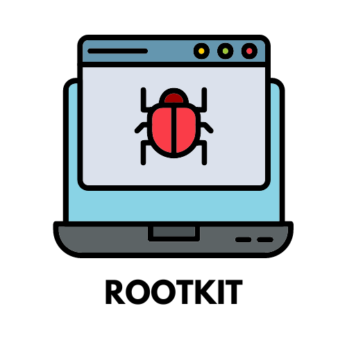Es un software que permite a los ciber intrusos acceder a equipos sin ser detectados para robar información sensible. Los Rootkits permiten acceso privilegiado a un usuario (el hacker), que se conecta de forma remota, alterando el sistema operativo para ocultar la maniobra.
Un auténtico riesgo para empresas y usuarios, que pueden ver sustraídas sus claves de acceso, datos bancarios, etc.
Un rootkit es un paquete de software malicioso diseñado para permitir el acceso no autorizado a un equipo o a otro software. Los rootkits son difíciles de detectar y pueden ocultar su presencia en un sistema infectado. Los hackers usan este tipo de malware para acceder de forma remota a su equipo, manipularlo y robar datos. Cuando un rootkit se arraiga en el sistema, este se comporta como un equipo zombi y el hacker puede usar el acceso remoto para ejercer un control absoluto de su dispositivo. Esta parte de la definición de rootkit es la que les otorga tanto poder. De la misma manera que el malware sin archivos usa programas legítimos sin dejar rastro, los rootkits también pueden parecer legítimos, porque el hacker tiene acceso con privilegios a los archivos y procesos del sistema. Los rootkits hacen que su equipo le mienta a usted y, a veces, también al antivirus y al software de seguridad.
Los rootkits permiten que el código malicioso se esconda en su dispositivo. Cuando un rootkit ataca su equipo, autoriza el acceso remoto de administrador a su sistema operativo, a la vez que evita ser detectado.
¿Qué modifica un rootkit?
Como la finalidad de un rootkit es conseguir un acceso privilegiado y a nivel de administrador al sistema de su equipo, un rootkit puede realizar las mismas modificaciones que un administrador. A continuación, se muestra una breve lista de lo que puede hacer o modificar un rootkit.
Ocultar malware: Los rootkits esconden otros tipos de malware en su dispositivo y dificultan su eliminación.
Obtener acceso remoto: Los rootkits proporcionan acceso remoto a su sistema operativo, a la vez que evitan ser detectados. Las instalaciones de rootkits se asocian cada vez más a las estafas de acceso remoto.
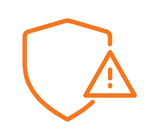Manipular o desactivar programas de seguridad: Algunos rootkits pueden ocultarse ante los programas de seguridad de su equipo o apagarlos del todo, por lo que dificultan la detección y eliminación del malware.
Robar datos: La mayoría de las veces, los ciberdelincuentes utilizan rootkits para robar datos. Algunos hackers atacan a personas y recaban datos personales para cometer robo de identidad o fraude. Otros van a por empresas, ya sea para espiarlas o para cometer delitos financieros.
Crear una «puerta trasera» permanente: Algunos rootkits pueden crear en su sistema una puerta trasera de ciberseguridad que queda abierta para que el hacker pueda regresar más adelante.
Espiarle: Los rootkits pueden usarse como herramientas de seguimiento que permiten que los hackers le espíen.
Invadir su privacidad: Con un rootkit, un hacker puede interceptar su tráfico de Internet, registrar las teclas que pulsa e incluso leer su correo electrónico.
No es fácil eliminar un rootkit. Como se ocultan en lo más profundo de su sistema operativo, su presencia es difícil de detectar. Sin embargo, cuando sabe que tiene uno, curar la infección rootkit de su equipo zombi es de vital importancia.
Paso 1: Ejecutar un software de eliminación de rootkits
No confíe en Windows Defender o en otro software de seguridad integrado, ya que la mayoría de los rootkits pueden subvertir las protecciones básicas. Para obtener una protección completa, use software especializado.
Paso 2: Realizar un análisis al arranque
El malware moderno usa técnicas sofisticadas para evitar ser detectado por los productos de antivirus. Una vez que se ejecuta el sistema operativo, los rootkits presentes en el dispositivo pueden burlar los análisis automáticos del antivirus. Si un antivirus le solicita al sistema operativo que abra un archivo de malware en concreto, el rootkit puede cambiar el flujo de información y abrir un archivo inofensivo en su lugar. También pueden cambiar el código de enumeración de un archivo de malware, utilizado para almacenar y compartir información sobre el malware, lo que evitaría que se incluyera en un análisis.
Es por eso que un análisis al arranque, es tan útil. Los análisis al arranque se ejecutan durante el proceso de inicio de su equipo y atrapan a los rootkits antes de que actúen. La ventaja del análisis al arranque es que normalmente el rootkit se encontrará aún en un estado inactivo y no podrá ocultarse en su sistema.
Paso 3: Borrar el dispositivo y reinstalar el sistema operativo
Si el antivirus y el análisis al arranque no son capaces de eliminar el rootkit, intente hacer una copia de seguridad de sus datos, borrar su dispositivo y realizar una instalación limpia. A veces esta es la única solución cuando el rootkit opera a nivel de arranque, firmware o hipervisor. Para empezar, debe saber cómo formatear un disco duro y clonar un disco duro para hacer una copia de seguridad de sus archivos importantes. Es posible que deba borrar el disco C: principal, pero aún puede conservar la mayoría de sus datos. Este es el último recurso para eliminar un rootkit.
El mejor método para eliminar un virus rootkit es evitar tener que eliminarlo. Hay acciones que puede realizar ahora mismo para evitar la temida pregunta de cómo eliminar un rootkit. Practique hábitos inteligentes de seguridad en línea y estará mucho más cerca de mantenerse libre de rootkits.
Recele de los archivos desconocidos: Debería revisar con atención incluso los archivos que le envían los contactos de confianza antes de abrirlos. Nunca abra los archivos adjuntos de remitentes desconocidos, podrían ser ataques de phishing.
Obtenga el software de fuentes reputadas: Lo ideal es obtenerlo directamente del fabricante o desde las tiendas App Store o Google Play. Examine atentamente los términos y condiciones para asegurarse de que nadie intenta colarle un rootkit en el dispositivo.
Instale las actualizaciones del sistema de inmediato: Estas actualizaciones suelen parchear vulnerabilidades descubiertas recientemente que los hackers pueden aprovechar para colarse en su dispositivo.
Cuando un rootkit hace su trabajo adecuadamente, usted ni se da cuenta. La mejor manera de encontrar y detectar rootkits es con una herramienta de análisis y eliminación de rootkits. Para los que prefieren hacerlo ellos mismos, tenemos consejos alternativos sobre cómo encontrar un rootkit. No será tan fácil como escoger el mejor software de antivirus gratuito y, aunque encuentre el rootkit usted mismo, es posible que no pueda eliminarlo, pero estamos aquí para ayudarle.
Las siguientes señales de alerta pueden indicar la presencia de un rootkit en su dispositivo:
Su sistema actúa de forma extraña: Los rootkits permiten a los hackers manipular el sistema operativo de su equipo. Si su equipo actúa de forma extraña, es posible que sea obra de un hacker a través de un rootkit.
Cambio en la configuración: En general, su equipo no debería hacer cosas sin que se lo digan, y lo ideal es que sea usted quien decida lo que hace. El acceso remoto mediante un rootkit puede permitir a alguien trastear en sus ajustes y configuraciones. Si algo parece diferente, tal vez deba preocuparse.
Intermitencia en páginas web y actividades de red: Si su conexión a Internet empieza a fallar más de lo habitual, tal vez sea algo peor que un problema en el servicio. Si un hacker está utilizando un rootkit para enviar o recibir mucho tráfico desde su equipo, su conexión a Internet podría verse afectada.
Si sospecha que su equipo se ha infectado, las siguientes técnicas podrían ayudarle a encontrar el rootkit:
Análisis de firmas: Los ordenadores actúan con números. La firma de un software es el conjunto de números que sirve como su representación, en argot informático. Puede analizar su equipo con una base de datos de firmas de rootkits conocidos para comprobar si se encuentra alguna de ellas.
Análisis del volcado de memoria: Cuando un equipo Windows se bloquea, genera un archivo llamado volcado de memoria o volcado de bloqueo. Un técnico experimentado puede examinar este archivo para identificar el origen del bloqueo y ver si fue causado por un rootkit.
Búsqueda en la memoria del sistema: Rebusque entre la memoria del sistema de su equipo para ver si hay algo extraño. Compruebe todos los puntos de entrada (acceso) en busca de señales de llamadas a procesos y rastree todas las llamadas a bibliotecas importadas desde las bibliotecas de vínculos dinámicos (DLL, por sus siglas en inglés). Algunas pueden estar enganchadas o redirigidas a otras funciones.
A diferencia de los gusanos informáticos y los virus, pero de una forma similar al malware de tipo troyano, las infecciones rootkit necesitan ayuda para instalarse en su equipo.
Los hackers empaquetan los rootkits junto con dos programas asociados, el dropper y el loader, que colaboran para instalar el rootkit. Estos tres elementos de malware componen una amenaza combinada. Vamos a analizar con más detalle las herramientas utilizadas por los rootkits para instalarse:
Dropper: El «dropper» importa el rootkit en el equipo de la víctima. El dropper es la primera fase en el proceso de instalación. Una vez que la víctima lo activa, el «dropper» activa a su vez el «loader».
Loader: Cuando el dropper se ejecuta, el loader salta a la acción e instala el rootkit en el sistema de destino. A menudo lo hace provocando un desbordamiento de búfer. Este es un exploit habitual que permite a los hackers introducir su código en áreas por lo demás inaccesibles de la memoria de un equipo.
Los rootkits incluyen un «dropper» y un «loader» que funcionan juntos para realizar un ataque.
La dificultad para el ciberdelincuente es introducir el paquete de amenaza combinada. A continuación, se detallan algunas de las estrategias que pueden utilizar los hackers para hacer esto e instalar un rootkit en su equipo:
Secuestrar los programas de mensajería: Una amenaza combinada puede secuestrar los clientes de mensajería instantánea y propagarse entre los contactos de la víctima. Cuando los destinatarios hacen clic en el enlace malicioso del mensaje, sus equipos se infectan también. Este tipo de ataque de ingeniería social es un método muy eficaz para propagar los rootkits.
Fisgonear en un software de confianza: Los hackers pueden insertar un rootkit de equipo en programas y aplicaciones que parecen de confianza y, a continuación, cargar estas aplicaciones envenenadas en distintos portales de descarga. Cuando alguien instala la aplicación infectada, instala también sin saberlo el rootkit.
Usar otro malware: Pueden utilizarse virus y troyanos como propagadores de rootkits, ya que son muy eficaces a la hora de colarse en su equipo. Cuando ejecuta el programa que contiene el virus, o cuando ejecuta el troyano, el rootkit se instala en su dispositivo.
Esconderse en archivos con contenido enriquecido: Con la llegada de los archivos con contenido enriquecido como los PDF, los hackers ya no necesitan esconder el malware en sitios web o programas. Les basta con incrustar los rootkits en estos archivos. Cuando abre el archivo contaminado, el dropper del rootkit se ejecuta automáticamente.
Los expertos en seguridad dividen los rootkits en seis categorías, basadas en la parte del equipo infectada y la profundidad de la infección.
Rootkits de modo de usuario
Los rootkits de modo de usuario infectan la cuenta de administrador de su sistema operativo y obtienen los privilegios de máximo nivel necesarios para cambiar los protocolos de seguridad de su equipo, a la vez que se ocultan así mismos y ocultan cualquier otro malware que utilicen. Estos rootkits se inician automáticamente cuando arranca el equipo, así que un simple reinicio no basta para limpiar la infección. Los programas de análisis y eliminación de malware como Avast Free Antivirus pueden detectar los rootkits de modo de usuario, ya que el software de detección de rootkits se ejecuta a un nivel más profundo, conocido como kernel.
Rootkits de modo kernel
Como respuesta a los analizadores de rootkits en el nivel de kernel, los hackers crearon los rootkits de modo kernel. Residen en el mismo nivel del equipo que el propio sistema operativo y, por tanto, comprometen dicho sistema por completo. Cuando se infecta con un rootkit de modo kernel, ya no hay nada en su equipo de lo que pueda fiarse: todo está potencialmente contaminado, incluidos los resultados de cualquier análisis antirootkit. Por suerte, es muy difícil crear un rootkit de modo kernel que pueda operar sin causar bloqueos del sistema frecuentes y otros problemas de funcionamiento que revelen su presencia.
Rootkits híbridos
Los rootkits híbridos ponen algunos de sus componentes en el nivel de usuario y otros en el kernel. De este modo, un rootkit híbrido disfruta de la estabilidad de los rootkits de modo de usuario, pero con el sigilo potenciado de sus primos del kernel. Como cabía imaginar, los rootkits híbridos de usuario y kernel son muy populares entre los ciberdelincuentes.
Rootkits de firmware
El firmware es un tipo de software de bajo nivel que controla un elemento hardware del equipo. Algunos rootkits pueden esconderse en el firmware cuando apaga el equipo. Cuando vuelve a encenderlo, un rootkit de firmware es capaz de reinstalarse y volver al trabajo. Si un analizador encuentra y desactiva un rootkit de firmware mientras está en funcionamiento, el rootkit reaparecerá la próxima vez que encienda el equipo. Es bastante complicado purgar un sistema informático de los rootkits de firmware.
Bootkits
Cuando se enciende el equipo, este consulta el registro de arranque principal (MBR, por sus siglas en inglés) para obtener instrucciones acerca de cómo debe cargar el sistema operativo. Los bootkits, también conocidos como rootkits bootloader, son una variante del rootkit de modo kernel que infecta el MBR de su equipo. Siempre que el equipo consulta el MBR, el bootkit también se carga. A los programas antimalware les cuesta detectar los bootkits, como sucede con todos los rootkits de modo kernel, ya que no residen en el sistema operativo. Afortunadamente, los bootkits han quedado obsoletos porque tanto Windows 8 como Windows 10 los contrarrestan con la función de Arranque seguro.
Rootkits virtuales
Una máquina virtual es una emulación basada en software de un equipo independiente hospedada en un equipo físico. Las máquinas virtuales se utilizan para ejecutar varios sistemas operativos en una misma máquina, o para probar programas en un entorno aislado. Los rootkits virtuales, o rootkits basados en máquinas virtuales (VMBR, por sus siglas en inglés), se cargan bajo el sistema operativo original y después ponen dicho sistema operativo en una máquina virtual. Dado que se ejecutan independientemente del sistema operativo del equipo, son muy difíciles de detectar.
Cuando aparece un nuevo rootkit, se convierte de inmediato en uno de los problemas más urgentes para la ciberseguridad. Echemos un vistazo a algunos de los ejemplos de rootkits más conocidos de la historia. Algunos fueron creados por hackers y otros, sorprendentemente, los idearon y utilizaron grandes corporaciones.
Cronología de algunos de los ejemplos más conocidos de ataques de rootkits.
1990: Lane Davis y Steven Dake crean el primer rootkit conocido en Sun Microsystems para el sistema operativo Unix SunOS.
1999: Greg Hoglund publica un artículo donde describe cómo creó un troyano denominado NTRootkit, el primer rootkit para Windows. Es un ejemplo de virus rootkit que funciona en modo kernel.
2003: El rootkit de modo de usuario HackerDefender aparece para Windows 2000 y Windows XP. La llegada de HackerDefender inició un juego del gato y el ratón entre el malware y la herramienta antirootkit RootkitRevealer.
2004: Se utiliza un rootkit para pinchar más de 100 teléfonos móviles de la red de Vodafone en Grecia, incluido el utilizado por el primer ministro, en un ataque que se llegaría a conocer como el Watergate griego.
2005: Sony BMG se ve envuelta en un gran escándalo tras distribuir CD que instalan rootkits como herramienta antipiratería sin el consentimiento previo de los consumidores.
2008: El bootkit TDL-4, entonces conocido como TDL-1, impulsa el infausto troyano Alureon, empleado para crear y mantener redes de robots.
2009: La prueba de concepto de rootkit Machiavelli ataca macOS (entonces denominado Mac OS X); este hecho demuestra que los Mac también son vulnerables al malware de tipo rootkit.
2010: El gusano Stuxnet, presuntamente desarrollado por Estados Unidos e Israel, utilizó un rootkit para ocultar su presencia y atacar el programa nuclear de Irán.
2012: Un malware modular de 20 MB conocido como Flame siembra el caos en infraestructuras de Oriente Próximo y el norte de África. (Es comparativamente enorme, ya que la gran mayoría del malware ocupa menos de 1 MB).
2018: LoJax es el primer rootkit que infecta el UEFI de un equipo, el firmware que controla la placa base, lo que le permite sobrevivir incluso a la reinstalación del sistema operativo.
2019: Este ataque reciente proviene de Scranos, un rootkit que roba las contraseñas y los datos de pago almacenados en su navegador. Además, convierte su equipo en una granja de clics para generar ingresos derivados de los vídeos y suscriptores de YouTube a escondidas.
Aunque tambi´n existen versiones que funcionan a través de dispositivos o complementos para hardware, hablamos básicamente de programas que pueden llegar a un equipo a través de virus, troyanos, etc.
y que se dedican a memorizar las pulsaciones de teclado que realiza el usuario. La información queda registrada en un archivo y puede ser enviada a través de Internet. Como puedes imaginar, los ciberdelincuentes pueden hacerse con todo tipo de contraseñas, datos bancarios y cualquier otro tipo de información privada.
Un keylogger (abreviatura de «keystroke logging», o registro de pulsaciones de teclas) es un tipo de software malicioso que registra todas las pulsaciones de teclas que realice en el ordenador. Los keyloggers son un tipo de spyware, es decir, un software malicioso diseñado para espiar a las víctimas. Debido a su capacidad para registrar todo lo que escriba, los keyloggers son una de las formas más invasivas de malware. Existen dos tipos principales de keyloggers: de software y de hardware. El software keylogger es más común que el hardware, porque este último requiere un acceso físico real a un dispositivo.
Software keylogger
El software keylogger es más común que el hardware, porque no se necesita acceso físico al dispositivo objetivo. El software keylogger funciona como otro software malicioso: se infiltra en el dispositivo a través de enlaces o archivos adjuntos maliciosos, o incluso mediante exploits o troyanos. Un keylogger se ejecuta silenciosamente en el fondo del ordenador hasta que lo descubra y lo elimine. El software keylogger suele ser malicioso, pero algunas empresas y padres lo usan para vigilar a los empleados y a los niños. Según su aplicación, el software de seguimiento del tiempo y las aplicaciones de control parental pueden rozar fácilmente el territorio del espionaje. Cuando los keyloggers se usan para espiar a los seres queridos, se les conoce como stalkerware.
¿Qué puede hacer el software keylogger?
Registrar todas las teclas que pulse, incluidas sus contraseñas y números de tarjetas de crédito.
Registrar ambas partes de las conversaciones en las aplicaciones de mensajería y los correos electrónicos.
Registrar el historial de navegación y búsqueda.
Realizar capturas de pantalla cuando se escriban determinadas palabras clave.
Tomar el control remoto del dispositivo.
Iniciar o cerrar la sesión del dispositivo de forma remota.
Registrar durante cuánto tiempo usa determinadas aplicaciones.
Imprimir registros o enviarlos por correo electrónico al pirata informático.
Esconderse en segundo plano.
Los keyloggers registran lo que escribe y espían sus contraseñas, mensajes y mucho más.
Los keyloggers basados en hardware adoptan la forma de un dispositivo físico, como una memoria USB u otro elemento que puede tener un aspecto similar al de un cargador. Registran las pulsaciones del teclado y otros datos, para que un pirata informático los recupere más tarde. Los keyloggers de hardware son difíciles de detectar con un software antivirus. Para que un pirata informático pueda instalar un keylogger basado en hardware, debe tener acceso físico a su dispositivo. Por lo general, tratarán de ocultar el hardware en la parte trasera de una torre de PC de sobremesa o en algún otro lugar en el que sea poco probable que mire.
Los keyloggers funcionan colándose en el ordenador, a menudo ocultos dentro de un troyano u otro malware. Un keylogger registra las pulsaciones del teclado en pequeños archivos que el atacante pueda ver. Los archivos pueden enviarse periódicamente por correo electrónico al pirata informático, subirse a un sitio web o a una base de datos, o transmitirse de forma inalámbrica. Con los keyloggers basados en hardware, los archivos pueden quedar almacenados en el ordenador hasta que el pirata informático recupere el dispositivo de registro de teclas.
Los keyloggers se esconden en su dispositivo, registran sus pulsaciones del teclado y se las envían al atacante.
Dado que los keyloggers pueden registrar todo lo que escriba, suponen un enorme riesgo para la seguridad de sus datos. Un pirata informático con acceso a sus nombres de usuario y contraseñas está a un paso de cometer un fraude de identidad, un robo monetario, de vender sus datos privados en la red oscura o a corredores de datos, de exponer su información personal y de causar todo tipo de estragos.
Los keyloggers son una de las formas más peligrosas de malware que existen.
Sí, los keyloggers pueden detectarse, pero puede resultar complicado. Como la mayoría de los tipos de software malicioso, los keyloggers están diseñados para permanecer ocultos. La forma más fácil de detectar el malware es usar un software antivirus potente que detecte y bloquee los keyloggers antes de que lleguen a infectarle el dispositivo.
Si cree que ya se ha infectado con un keylogger, preste atención a las típicas señales de advertencia y use inmediatamente una herramienta de eliminación de malware.
¿Cuáles son las señales de advertencia de los keyloggers?
Las señales de advertencia de los keyloggers son similares a las de otros tipos de malware. Debe prestar atención a esto si cree que puede tener un keylogger en su dispositivo:
Un rendimiento lento. Si de pronto su ordenador transmite todas sus pulsaciones a un pirata informático, su rendimiento se verá afectado en todos los aspectos.
Bloqueos y errores inesperados. Toda la potencia de procesamiento necesaria para el registro puede hacer que sus otras aplicaciones se bloqueen y se cuelguen más a menudo de lo habitual.
Cambios en la configuración. Si de repente tiene una nueva página de inicio del navegador, barras de herramientas o iconos, podría ser una señal de software malicioso como un keylogger.
Redireccionamientos extraños. Si teclea búsquedas y se le redirige a un motor de búsqueda inesperado o a páginas web que parecen un tanto extrañas, podría tratarse de una redirección maliciosa.
La legalidad de los keyloggers depende del consentimiento ; los keyloggers son ilegales sin él. Si trabaja para una empresa que usa software de monitorización o seguimiento de empleados, tiene que acordar en su contrato que da su consentimiento a este tipo de registro de teclas. Los padres están legalmente autorizados a vigilar a sus hijos si son menores de 18 años. El registro malicioso de teclas por parte de piratas informáticos contra las víctimas es ilegal. La víctima no dio su consentimiento para que la vigilasen, y el registro de teclas va en contra de varias leyes sobre robo de datos, escuchas telefónicas, ciberdelincuencia y piratería informática.
Por lo general, es legal instalar un keylogger en dispositivos que sean de su propiedad, pero no en los que no lo sean. Incluso dejar que alguien tome prestado su ordenador sin informarle de su keylogger es ilegal. Y usar la información obtenida ilegalmente del registro de teclas, como nombres de usuario y contraseñas, para otros delitos, como el robo o el fraude, puede dar lugar a sanciones penales aún más duras.
¿Quién usa keyloggers?
Los keyloggers no son explícitamente maliciosos, y a veces incluso se usan con fines legítimos. Estas son algunas de las personas que podrían usar keyloggers:
Padres y madres: Algunos programas de control parental son esencialmente spyware o incluso un keylogger. Aunque es legal que los padres vigilen a sus hijos menores de edad, hacerlo puede erosionar las relaciones familiares. Le recomendamos que hable abiertamente de la seguridad en Internet con sus hijos.
Empresas: Algunas empresas utilizan keyloggers (denominados «software de supervisión de empleados») para rastrear las aplicaciones que usan los empleados y cómo utilizan su tiempo. Pero las empresas necesitan su consentimiento para hacerlo.
Soporte de TI: Si tiene un problema con el ordenador, el departamento de TI puede usar un keylogger para observar lo que ocurre a distancia y encontrar una solución. Pero también necesitan su consentimiento. Tenga cuidado con las estafas de soporte técnico.
Aplicación de la ley: La policía puede usar software de registro de teclas para rastrear la actividad de los sospechosos, pero necesita autorización mediante las correspondientes órdenes de registro.
Hackers: Cuando la mayoría de la gente piensa en keyloggers, tienen a los piratas informáticos en mente.
Abusadores: Una tendencia preocupante: el stalkerware va en aumento y los keyloggers pueden usarse junto con la violencia de pareja. Consulte esta guía de seguridad digital para supervivientes de violencia de pareja si necesita ayuda.
La mejor manera de prevenir los registros de teclas es practicar hábitos digitales inteligentes y de higiene. Si pone en práctica estos consejos evitará los keyloggers junto con los virus, ransomware, adware y otros tipos de malware.
Así puede evitar los registros de teclas:
Instale un bloqueador de anuncios y evite hacer clic en las ventanas emergentes. Aunque es poco frecuente, los anuncios pueden contener malware, y en todo caso es buena idea usar un bloqueador de anuncios.
Tenga cuidado con los archivos adjuntos. Si un contacto le envía un archivo adjunto que no esperaba, tenga cuidado antes de hacer clic. Es posible que hayan sido víctimas de un ataque informático y que el archivo adjunto ejecute un malware al hacer clic en él.
Nunca facilite información personal por correo electrónico. Las empresas legítimas no se pondrán en contacto con usted para pedirle su contraseña u otra información personal. Estas solicitudes son probablemente intentos de phishing, es decir, piratas informáticos que intentan usar métodos de ingeniería social para acceder a sus datos.
Instale siempre las actualizaciones cuando estén disponibles. Las actualizaciones contienen correcciones de errores y parches de seguridad que evitan los exploits, entre otras cosas.
Descargue software solo de fuentes de confianza. Los sitios de descarga de terceros pueden agrupar software legítimo con bloatware o software malicioso.
No deje sus dispositivos sin supervisión en público. Un pirata informático podría estar al acecho en la cafetería, listo para instalar un keylogger de software o hardware.
Utilice un software antivirus potente. Instalar un antivirus potente es la mejor protección contra todo tipo de software malicioso.
 Es un tipo de ataque en que el hacker intercepta tráfico que viaja de un equipo emisor a otro receptor.
Es un tipo de ataque en que el hacker intercepta tráfico que viaja de un equipo emisor a otro receptor.
Por eso se llama Man in the middle, que en español significa “Hombre en el medio”.
Al convertirse en un punto intermedio por donde pasa la información desde su lugar de origen (el equipo de un empleado, por ejemplo), a un emplazamiento de destino (supongamos que es el servidor de la compañía), el ciberdelincuente puede descifrar los datos y hacerse con claves y contraseñas.
El objetivo de la mayoría de los ciberdelincuentes es robar la información valiosa para los usuarios. Los ataques pueden ser dirigidos a usuarios individuales, páginas web famosas o bases de datos financieros. Aunque la metodología sea diferente en cada situación, el fin siempre es el mismo. En la mayoría de los casos, los criminales intentan, en primer lugar, insertar algún tipo de malware en el equipo de la víctima, ya que ésta es la ruta más corta entre ellos y los datos que tanto desean. Si esto no les resulta posible, otra forma común es el ataque Man-in-the-Middle. Como sugiere su nombre en inglés, en este método se introduce un intermediario (el cibercriminal o una herramienta maliciosa) entre la víctima y la fuente: una página de banca online o una cuenta de correo electrónico. Estos ataques son realmente efectivos y, a su vez, muy difíciles de detectar por el usuario, quien no es consciente de los daños que puede llegar a sufrir.
El concepto de un ataque MiTM es muy sencillo. Además, no se limita únicamente al ámbito de la seguridad informática o el mundo online. Este método sólo necesita que el atacante se sitúe entre las dos partes que intentan comunicarse; interceptando los mensajes enviados e imitando al menos a una de ellas. Por ejemplo, en el mundo offline, se crearían facturas falsas, enviándolas al correo de la víctima e interceptando los cheques de pago de dichos recibos. En el mundo online, un ataque MiTM es mucho más complejo, pero la idea es la misma. El atacante se sitúa entre el objetivo y la fuente; pasando totalmente desapercibido para poder alcanzar con éxito la meta.
En el ataque MiTM más habitual, se utiliza un router WiFi para interceptar las comunicaciones del usuario. Esto se puede realizar configurando el router malicioso para que parezca legítimo o atacando un error del mismo e interceptando la sesión del usuario. En el primero de los casos, el atancante configura su ordenador u otro dispositivo para que actúe como red WiFi, nombrándolo como si fuera una red pública (de un aeropuerto o una cafetería). Después, el usuario se conecta al “router” y busca páginas de banca o compras online, capturando el criminal las credenciales de la víctima para usarlas posteriormente. En el segundo caso, un delincuente encuentra una vulnerabilidad en la configuración del sistema de cifrado de un WiFi legítimo y la utiliza para interceptar las comunicaciones entre el usuario y el router. Éste es el método más complejo de los dos, pero también el más efectivo; ya que el atacante tiene acceso continuo al router durante horas o días. Además, puede husmear en las sesiones de forma silenciosa sin que la víctima sea consciente de nada.
Una variante más reciente de este tipo de ataque es el ataque man-in-the-browser. En este contexto, el ciberdelincuente usa una serie de métodos para insertar un código malicioso en el equipo de la víctima, el cual funciona dentro del navegador. Este malware registra, silenciosamente, los datos enviados entre el navegador y las páginas. Estos ataques han ganado en popularidad porque permiten al delincuente atacar a un grupo mayor de víctimas sin la necesidad de estar cerca de éstas.
Existen diferentes formas efectivas para defendernos de los ataques MiTM, pero la mayoría de ellas usan un router/servidor y no permiten que el usuario controle la seguridad de la transacción que realiza. Este método de defensa usa un sistema de cifrado fuerte entre el cliente y el servidor. En este caso, el servidor se verifica así mismo presentando un certificado digital y se establece un canal cifrado entre el cliente y el servidor a través del que se envía la información confidencial. Además, los usuarios pueden protegerse de estos ataques evitando conectarse a routers WiFi abiertos o usando plugins de navegador como HTTPS Everywhere o ForceTLS; los cuales establecen una conexión segura siempre que sea posible. Sin embargo, cada una de estos métodos tiene sus límites y existen ejemplos de ataques como SSLStrip o SSLSniff que pueden invalidar la seguridad de las conexiones SSL.
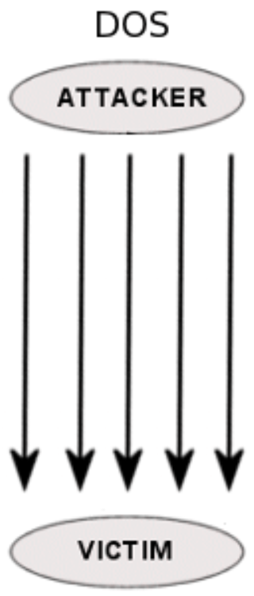Tener la página web de empresa caída durante algún tiempo puede suponer importantes pérdidas económicas, ¡sobre todo si se trata de una tienda online! Ese es el objetivo de los ataques de Denial Of Service (DOS), o de “denegación de servicio”. Un ordenador lanza peticiones al servidor en el que se aloja el sitio web hasta que lo satura y empieza a denegar el acceso. La web cae con sus correspondientes pérdidas en ventas, oportunidades de negocio, etc. Para detener el ataque basta con banear la IP del atacante. Pero si el tiempo en que permanece la web caída es el suficiente, las pérdidas ya han tenido lugar y el daño está hecho.
En sus orígenes, denial of service o DoS se empleaba cuando algunos servicios de internet dejaban de estar disponibles temporalmente en un sistema de TI, como un servidor. Esto ocurre cuando los servidores correspondientes se sobrecargan, por ejemplo, por un número excesivo de solicitudes de los usuarios. Los servicios de internet incluyen sitios web, servicios de correo electrónico o funciones de chat. En un ataque DoS, el atacante causa esta “negación de servicio” deliberadamente. Para esto, “bombardea” las conexiones de red del sistema informático responsable del intercambio de datos externos con multitud de solicitudes, con el fin de sobrecargarlas. Si el número de solicitudes supera la capacidad del sistema, este se ralentiza o se paraliza por completo, de modo que ya no se pueda acceder a sitios web, funciones de correo electrónico o tiendas en línea. Un ataque DoS se puede comparar a una situación en una tienda real en la que entran cientos de personas que distraen al personal de ventas con preguntas engañosas, bloquean recursos y no realizan ninguna compra. El personal se sobrecarga hasta que no puede atender a nadie más y los clientes reales no pueden entrar en la tienda o no se les puede atender.
Los ataques DoS puros son, en principio, relativamente fáciles de realizar, sobre todo porque para realizarlos no es necesario penetrar en las medidas de seguridad de un sistema informático. Incluso es posible llevar a cabo este ataque ilegal con un presupuesto relativamente reducido y sin conocimientos técnicos. Se pueden encontrar ciberdelincuentes dispuestos a realizar este tipo de ataques por pocos cientos de euros en la darknet. Si las empresas y organizaciones no están preparadas para los ataques DoS, quedan expuestas a enormes daños con un mínimo esfuerzo por parte de los malhechores.
Un posible indicio de que estás pasando por un ataque DoS es el rendimiento inusualmente lento de toda la red, lo que se nota especialmente al abrir archivos o los propios sitios web. Un ataque DoS exitoso es también fácil de apreciar desde el exterior: los sitios web atacados cargan muy lentamente. Además, algunas funciones, como por ejemplo las de tienda en línea, dejan de funcionar por completo. En el punto álgido del ataque, muchos sitios web dejan de estar accesibles.
Puedes determinar si has sido víctima de un ataque DoS supervisando y analizando el tráfico de red con ayuda de un cortafuegos o con otro sistema de detección de ataques (Intrusion Detection System). Los administradores de la red tienen la capacidad de establecer criterios para detectar el tráfico anormal. Si el número de solicitudes sospechosas al sistema aumenta, se activa automáticamente una alarma. Esto permite tomar contramedidas lo antes posible.
En la actualidad existen muchos tipos diferentes de ataques DoS, que pueden distinguirse a grandes rasgos en ataques contra el ancho de banda, ataques contra los recursos del sistema y ataques que aprovechan las vulnerabilidades de seguridad y los errores de software. Para entender cómo proceden los malhechores en un ataque DoS y qué medidas pueden tomarse para contrarrestarlo, se puede tomar como ejemplo el ataque pitufo o smurf attack. Este es un tipo específico de ataque DoS dirigido al sistema operativo o la conexión a internet de un sistema o red informática. El atacante envía pings, paquetes de datos ICMP del tipo Echo Request o “solicitud de eco”, a la dirección de emisión de una red. En estos paquetes de datos, el malhechor introduce la dirección del sistema que ataca. Entonces, todos los ordenadores de la red envían una respuesta a este sistema, asumiendo erróneamente que las solicitudes provienen de este. Cuantos más ordenadores formen parte de la red utilizada por el atacante, mayor será el número de supuestas respuestas y más devastador será el ataque.
Para evitar los ataques pitufos, los sistemas ya no responden a los paquetes de tipo “solicitud de eco” de la ICMP y los enrutadores ya no reenvían los paquetes dirigidos a las direcciones de difusión de forma predeterminada. Esta medida de seguridad general ha hecho que los ataques pitufos raras veces tengan éxito.
Existen varias medidas para proteger tu infraestructura contra los ataques de negación de servicio, que puedes combinar entre ellas para reforzarlas. En particular, debes configurar correctamente tus enrutadores y protegerlos con contraseñas fuertes. Con instalar medidas de protección en estos nodos, ya se pueden evitar muchos ataques DoS. De este modo, los paquetes de ataque ya no se admiten en la estructura interna. Un buen cortafuego proporciona seguridad adicional.
Después de determinar el objetivo de un ataque, puedes dedicarle recursos adicionales. La distribución de carga, por ejemplo, permite solicitar capacidad adicional al proveedor de alojamiento con poca antelación para así frustrar ataques DoS antes de que se produzcan.
Nuestro artículo contiene una descripción más precisa de la diferencia entre DDoS y DoS.
La mayoría de los ataques DoS de hoy en día toman la forma de ataques Distributed Denial of Service, que se identifican con las siglas DDoS. Los ataques DoS y DDoS se diferencian porque, mientras que los ataques DoS tienen un origen único (por ejemplo, un ordenador o una red), los ataques DDoS se llevan a cabo de manera indirecta a través de una red de bots, a menudo ampliamente distribuida (de ahí el término distributed).
Una botnet consiste en un grupo de ordenadores pirateados, llamados zombis. Se trata, en general, de ordenadores mal mantenidos, cuyos propietarios raras veces se dan cuenta del software malicioso instalado en ellos o de que los están utilizando para actividades delictivas. El operador de una red de bots puede utilizar este ejército de ordenadores zombis para atacar otros sistemas informáticos. Existen botnets compuestos por varios millones de ordenadores. Cuando se usan todos en un ataque DDoS, el número de “solicitudes ilegítimas” a una red puede aumentar enormemente. Esta es una de las razones por la que incluso portales con enormes recursos, como Facebook, no están cien por cien seguros contra un ataque DDoS a gran escala.
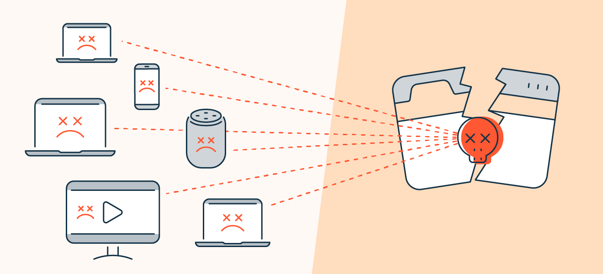El concepto es el mismo que en la amenaza anterior: se realizan peticiones masivas hasta saturar el servidor y hacer caer la web. Sin embargo, el ataque del que hablamos ahora es un Distributed Denial Of Service (DDOS), y es más sofisticado que el anterior. En lugar de lanzar los ataques desde un único equipo, los ataques DDOS emplean muchos ordenadores para distribuir las peticiones al servidor. A menudo, esos equipos pertenecen a usuarios que no saben para qué se están utilizando sus ordenadores, que han sido añadidos a una red Zombie por los hackers infectándolos con malware. El problema con este tipo de ataques es que al tener un origen múltiple es más difícil averiguar todas las IP de las que parte y, por lo tanto, es más difícil de detener. ¡Y estas amenazas solo son la punta del iceberg! Son las más comunes, pero hay muchas más. Además, con la revolución del Internet of Things (IoT) o “Internet de las cosas”, se espera que los retos a la seguridad de los dispositivos se incrementen de forma masiva. El aumento de dispositivos y bienes de consumo con acceso a la Red estimulará el desarrollo de nuevas amenazas de todo tipo. Quizá temas no volver a dormir tranquilo pensando en la cantidad de amenazas informáticas que acechan a tu empresa, pero no te preocupes. ¡No todo está perdido!
Los ataques de red distribuidos a menudo se conocen como ataques de denegación distribuida de servicio (DDoS). Este tipo de ataque aprovecha los límites de capacidad específicos que se aplican a cualquier recurso de red, tal como la infraestructura que habilita el sitio web de la empresa. El ataque DDoS envía varias solicitudes al recurso web atacado, con la intención de desbordar la capacidad del sitio web para administrar varias solicitudes y de evitar que este funcione correctamente.
Entre los objetivos más comunes de los ataques DDoS se incluyen:
Sitios de compra por Internet
Casinos en línea
Cualquier empresa u organización que dependa de la prestación de servicios en línea.

Cómo funciona un ataque DDoS
Los recursos de red (tales como los servidores web) tienen un límite finito de solicitudes que pueden atender al mismo tiempo. Además del límite de capacidad del servidor, el canal que conecta el servidor a Internet tiene un ancho de banda o capacidad limitados. Cuando la cantidad de solicitudes sobrepasa los límites de capacidad de cualquiera de los componentes de la infraestructura, el nivel de servicio probablemente se vea afectado de alguna de las siguientes maneras:
La respuesta a las solicitudes será mucho más lenta de lo normal.
Es posible que se ignoren algunas (o todas) las solicitudes de los usuarios.
Por regla general, la intención primordial del atacante es evitar por completo el funcionamiento normal del recurso web, una "denegación" total del servicio. El atacante también puede solicitar un pago para detener el ataque. En algunos casos, el objetivo del ataque DDoS puede ser desacreditar o dañar el negocio de un competidor.
Uso de una "red zombi" de botnet para lanzar un ataque DDoS
Para enviar una cantidad extremadamente grande de solicitudes al recurso víctima, el cibercriminal a menudo establece una "red zombi" de computadoras infectadas. Como el delincuente controla las acciones de cada computadora infectada en la red zombi, la gran escala del ataque puede desbordar los recursos web de la víctima.
Puede parecer obvio, pero ignorar la actividad de los correos internos es una falla común en todas las empresas. Los correos electrónicos son uno de los puntos más débiles de una organización, pues a través de ellos se pueden introducir fácilmente las amenazas. Monitorea la actividad de mensajes sospechosos, así como las descargas de archivos anexos. Asimismo, educa al personal de la empresa sobre el buen uso de este medio para que sea empleado solo con fines laborales.
Recolecta datos para establecer el comportamiento anormal de la red:
protocolos, aplicaciones o actividad de los usuarios. Presta atención al volumen del tráfico y a los cambios inesperados en el uso del protocolo.
Los malwares y códigos maliciosos generalmente se esconden en formatos comunes de archivo (PDF, html, GIF, Zip, etc.).
Una buena práctica consiste en escoger un antivirus capaz de descubrir, decodificar y descifrar estos códigos ocultos.
Los cibercriminales a menudo usan direcciones IP, sitios web, archivos y servidores de correo electrónico con un histórico de actividad maliciosa.
Utiliza herramientas capaces de examinar la reputación de fuentes no confiables ubicadas fuera de tu organización.
Cuando un atacante consiga ingresar a la red de tu empresa, puede emitir comandos direccionados a aplicaciones clave. Para prevenirlo, crea una lista blanca (whitelisting) para especificar cuáles aplicaciones pueden ser ejecutadas. Paralelamente, establece una lista negra de programas no autorizados. De esa manera puedes prevenir cualquier intento de alteración en el sistema, ya sea en el servidor de correo electrónico, en los archivos, en los paquetes de software, etc.
Intentos no autorizados de acceso a datos críticos y de modificación de la estructura en el banco de datos son señales de alerta que indican que su red puede estar siendo amenazada. Usa herramientas para monitorear bases de datos y registrar intentos de acceso no autorizado. Estas son algunas de ellas:
Solarwinds DB Performance Analyzer.
Idera SQL Diagnostic Manager.
Lepide SQL Server Auditing.
Heroix Longitude®.
SQL Power Tools.
Red-Gate SQL Monitor.
Sentry One (SQL Sentry).
Inspecciona los datos que sean propiedad intelectual de la empresa.
Asimismo, presta atención al movimiento poco común de datos, de tráfico criptografiado o transferencias de archivos sospechosos.
Si se trata de un computador personal, no es difícil garantizar que el equipo tenga un buen funcionamiento. Sin embargo, cuando no es uno, sino un sinnúmero de computadores, la tarea se vuelve dispendiosa. La mejor manera de enfrentar este desafío es haciendo un inventario de todo el hardware disponible en la empresa y través del módulo de seguridad de la informaci´n de Pirani puedes hacerlo fácilmente porque te permite gestionar todos los activos de información de tu empresa, así como los riesgos de seguridad a los que estos están expuestos. Además, para realizar las actualizaciones que los equipos requieren hay dos opciones: la primera es entrenar a los empleados para que las realicen periódicamente, y la segunda es automatizar el proceso a través de una herramienta que actualice automáticamente el sistema. Esta última opción permitir´ que se descarguen las actualizaciones de una sola vez y luego se van distribuyendo dentro de la empresa. La ventaja de este método es que tendrás la seguridad de que las actualizaciones están siendo instaladas en el momento en que lo indiques, sin tener que depender de intervención humana. Asimismo, centralizar las actualizaciones permite ejecutar tareas de gerenciamiento de sistemas fuera del horario de trabajo, sin entorpecer las actividades diarias de los empleados. Adicional a estas ocho recomendaciones, para prevenir la materialización de riesgos de seguridad de la información, es importante contar con una solución tecnológica como Pirani que también permite identificar, evaluar, controlar y monitorear este tipo de riesgos para asegurar la confidencialidad, integridad y disponibilidad de la información en las organizaciones.


Un software antivirus comienza comparando tus archivos y programas informáticos con una base de datos de tipos de malware conocidos. Dado que los piratas informáticos crean y distribuyen constantemente nuevos virus, también escaneará las computadoras en busca de la posibilidad de tipos nuevos o desconocidos de amenazas de malware. Generalmente, la mayoría de los programas usará tres dispositivos de detección diferentes: detección específica, la cual identifica el malware conocido; detección genérica, la cual busca partes o tipos de malware conocido, o patrones que se relacionan en virtud de una base de código común; y detección heurística, la cual escanea virus desconocidos al identificar estructuras de archivos sospechosas conocidas. Cuando el programa encuentra un archivo que contiene un virus, generalmente lo pone en cuarentena y/o lo aparta para eliminarlo, lo que lo hace inaccesible y permite eliminar el riesgo de tu aparato.
Los antivirus informáticos son piezas de software de aplicación cuyo objetivo es detectar y eliminar de un sistema computarizado los virus informáticos. Es decir, se trata de un programa que busca poner remedio a los daños causados por estas formas invasivas de software, cuya presencia en el sistema no suele ser detectable sino hasta que se evidencian sus síntomas, tal y como los virus biológicos. Durante la década de los 80, con la aparición de las tecnologías de intercambio de información digital como los disquetes y, más adelante, Internet, se hizo posible poner en contacto sucesivo a numerosas computadoras. Esto trajo consigo la aparición de los virus informáticos, y después, del spyware, malware y otras formas de software perjudicial que ingresan sin consentimiento del usuario a la máquina y causan diverso tipo de daños: desconfigurar secuencias clave, borrar archivos personales, secuestrar información privada, etc.
El remedio, entonces, fue adquirir un antivirus informático, ofrecidos por diversas empresas de programación comercial para garantizar el monitoreo, limpieza y protección de los computadores. En caso de carecer de ellos, el usuario corría riesgos de daños al sistema y de esparcir además el virus cada vez que copiara un disquete o que enviara un correo electrónico. Actualmente existe una oferta multitudinaria de servicios de antivirus, indispensables dado que pasamos cada vez más tiempo conectados a la Internet, recibiendo y enviando información de y a computadores desconocidos.
En la actualidad, los antivirus sirven para más que simplemente escanear y desinfectar una máquina que ha contraído un virus informático. Por lo general ofrecen servicios de monitoreo activo, para impedir el acceso total de un documento infectado al sistema, bloquear páginas web inseguras y eliminar archivos riesgosos apenas ingresen al computador. A esto suele llamársele protección activa. Por otro lado, los antivirus informáticos lidian también con otras piezas de software no deseado, como el spyware, malware o rootkits, e incluso de intentos de hackeo. Para ello posee un firewall (software de bloqueo de conexiones remotas) y una base de datos de definiciones de virus, que es una suerte de enciclopedia de los virus ya conocidos.
Puede identificarse varios tipos de antivirus informático, de acuerdo a su funcionamiento:
Antivirus de identificación. Aquellos que rastrean secuencias activas asociadas a determinados virus, pero no son muy efectivos a la hora de lidiar con el software indeseado. Tienen la virtud de ser muy ligeros, algunos se ejecutan desde la red.
Antivirus descontaminadores. Por lo general instalados en el sistema como cualquier otro software de aplicación, estos programas pueden activarse a voluntad para revisar el contenido completo del computador en busca de virus. De haberlos, entonces, se procede a la desinfección y, de no ser posible, a la cuarentena o el borrado.
Antivirus de protección a tiempo real. Aquellos que brindan protección constante al sistema, sin necesidad de llevar a cabo una revisión exhaustiva, sino revisando todos los archivos y conexiones entrantes y salientes. Estos antivirus suelen estar combinados con funciones descontaminadoras.